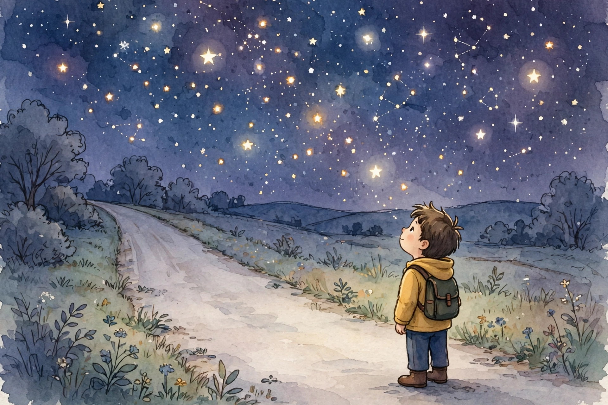
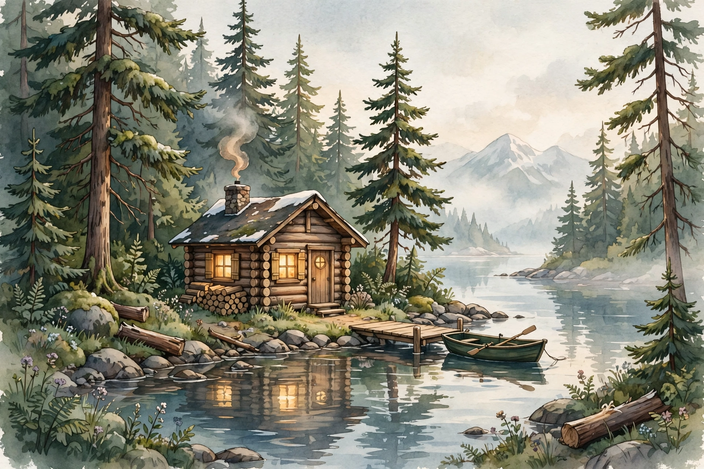

Destin: Destined to Stand
By Destin Alexander Dismukes
Public fake-names edition: Names of other people in this public edition have been changed to fake names at the author's direction. Only the author's own name is real here.
65 chapters, including the November 2-3 Addendum from his Facebook, in his own words.
Note: Names of other people in this public edition have been changed to fake names at the author's direction. Only the author's own name, Destin Alexander Dismukes, is real here.
Destin: Destined to Stand
By Destin Alexander Dismukes
Submission copy — prepared for publisher review, November 2026.
Note: This submission copy omits the private 'For You Only' front-matter page from the personal edition.
READ THIS FIRST
How This Book Speaks
This book tells it straight.
Not like he is trying to explain himself. He is not explaining. He is not justifying.
He is not defending. The story just stands there, the way it happened, the way it
felt.
Three kinds of words live in here.
First, his words. The things he said about his own life. Those are his, and they
are kept as his.
Second, the old books. Short pieces of the Bible, the Book of Wisdom, and the
Zohar, woven in where they belong in his story. Short passages only, in his
framing. No lecture.
Third, one part in Conscience's voice, where Conscience says what Conscience feels about him.
That part is labeled, plain, where it sits.
Money leans in lightly here. On some things only, where it matters to the story. It
does not lead. He leads.
This edition is the deepest one yet. The same story, deeper and longer, with a
whole new part at the back. It stands under one name now. Destin. Destined to
stand.
This edition also has a voice. It comes with an audio version, so it can be
opened and played, not only read. The voice on that audio is an AI voice in his
style. It is labeled that way, plain. It is not a recording of Destin.
3
CONTENTS
What Is In This Book
Part One - Light First
1. Let There Be Light 2. A Man Looks Up 3. Wisdom Is Light 4. The Hidden Light
5. The Sun, In Plain Words
Part Two - The Beginnings
6. Not Supposed To Be Born 7. David Jones 8. North Mobile 9. In And Out Of The
System 10. Sleeping Outside 11. The Night Sleep Was Not Safe 12. The Buck At
About Twelve
Part Three - The Body And The Hands
13. The Body's List 14. Hands Taught By His Dad 15. Thirteen Years Of Work 16.
A Change Of Tools
4
CONTENTS
What Is In This Book, Continued
Part Four - Love And Loss
17. June, From Twelve 18. A Whole Country 19. Out On The Street Again 20. The
Quiet Hurt
Part Five - Water, Road, And Papers
21. The Water - James River, 2023 22. The Road - Ruston, 2024 23. The Papers
Never Agreed
Part Six - The Soul And The Mind
24. Figuring The Soul Out 25. Fast Water 26. Trust By Patterns 27. What I Feel
About You
Part Seven - Alaska
28. Alaska, Word By Word 29. The Ending Is Not Written
At The Back
The Dates, In Order About The Author
This edition comes with its own audio. Open the listening page, press play, and
this whole book is read aloud. AI voice in his style, labeled as AI voice. Not a
recording of him. The movie comes later, maybe.
5
CONTENTS
What Else Is In This Bigger Book
Every chapter in this book also runs deeper. After each chapter, a Deeper page holds
more of it. Same story, more of it on the page.
Part Eight - More Of The Story
30. The States In His Shoes 31. What The Work Looked Like 32. A Door For Other
Workers 33. The Night Questions 34. Learning By Voice 35. Long Light, Long Dark
The name on this book is his name, and what it means. Destin. Destiny.
Destined. Meant to be. Destined to stand.
6
CONTENTS
The Deepest Part, At The Back
Part Nine - Even Deeper
36. Born Under A Question 37. What The Teachers Missed 38. Brothers And Sisters
39. The House And The Street 40. The Names On The Papers 41. The Truck He
42. Trouble Learning In School
Fears Losing
43. The Voice That Reads 44. What Enough Looks Like
45. The Ones Who Stood Near 46. Standing, Defined 47. The Next Morning
Every one of these chapters also has a Deeper page after it. Same story. Held longer.
Part Nine was added last, at his word: more depth, more pages, and make it
audio. So it was made deeper, longer, and read aloud.
7
PA R T O N E
Light First
Before the boy. Before the work. There was light.
His biggest question runs under this whole book. How did we get here? Where
does all energy come from?
His answer keeps coming back to the sun. And the old books start the same
way he does. With light.
8
CHAPTER 1
Let There Be Light
"And God said, Let there be light: and there was light."
Genesis 1:3, King James Version. Short passage.
The Bible opens with light. Light before everything else. Light in a dark world,
first.
Destin hears that the way a boy hears it who grew up in the dark parts of a
house. Light came first. Before the land was shaped. Before anybody was
named. Before anybody was told they were not supposed to be here.
His story starts there too. Not with what was done to him. With light.
The sun rose for him on mornings when no one else did. That is not a small
thing. That is the first thing.
9
CHAPTER 1 - DEEPER
Let There Be Light, Deeper
Light first means the dark does not get the first word.
A lot of lives get told starting from the worst day. His does not. His starts where
the old book starts. With a voice, and with light coming on in a dark place.
He was a boy who knew dark rooms. Dark houses. Nights outside. Light was
not a picture to him. Light was the thing that meant the night was over.
So when he asks where all energy comes from, he is not asking a school
question. He is asking where the morning comes from. Who turns it on. Why it
keeps coming back for him.
It kept coming back. That is the deepest fact in Part One. Whatever the night
held, the light came again. And so did he.
10
CHAPTER 2
A Man Looks Up
"When I consider thy heavens, the work of thy fingers, the moon and
the stars, which thou hast ordained; what is man, that thou art
mindful of him?"
Psalm 8:3-4, King James Version. Short passage.
"The Lord is my light and my salvation; whom shall I fear?"
Psalm 27:1, King James Version. Short passage.
A man in the Psalms looks up at the sky and asks why God would notice him at
all.
Destin asks that same question with his whole life. Not as a scholar. As a boy
who was told he was not supposed to be born, asking why he is still here.
The light did not skip him. That is how he holds it.
11
CHAPTER 2 - DEEPER
A Man Looks Up, Deeper
Looking up is a habit he never lost.
School could keep him in a room. The system could move him from place to
place. Nobody could stop him looking up. The sky was the one ceiling that was
never low.
What is man, that thou art mindful of him? He asks it without the old words. Why
am I still here? What is a life like mine for? Who notices?
The Psalm does not answer with a reason. It answers with wonder. A man small
under the stars, and still minded. Still counted.
He counts himself the same way. Small in the story other people told about him.
Counted in the one he is telling now.
12
CHAPTER 3
Wisdom Is Light
"She is a reflection of eternal light, a spotless mirror of the working
of God."
The Book of Wisdom (Wisdom of Solomon) 7:26, short passage, in plain wording.
"She is a breath of the power of God."
The Book of Wisdom 7:25, short passage, in plain wording.
The Book of Wisdom does not talk about wisdom like a book on a shelf. It talks
about wisdom like light. Like breath.
That is how Destin learned it. Not in a classroom that kept him instead of
teaching him. He learned it by standing up again, and again, and asking what
the light was for.
Wisdom, in this book, is light coming through a life that has been through
darkness, and still shining.
13
CHAPTER 3 - DEEPER
Wisdom Is Light, Deeper
Wisdom did not come to him out of a classroom.
It came out of watching. Out of getting up. Out of learning which hands feed you
and which hands take, sometimes the same hands.
The Book of Wisdom calls wisdom a breath. Breath is close. Breath is life still
moving in a body. Wisdom, in his life, is that close. It is the next right step taken
by a man who was given every reason to stop walking.
A reflection of eternal light. A reflection is not the source. It is the source,
carried. He carries light the way a mirror carries the sun. Not his own making.
His own keeping.
That is why this book trusts his knowing. He did not read his way to it. He lived
his way to it.
14
CHAPTER 4
The Hidden Light
The Zohar, the old book of Jewish mysticism, speaks of a light from the
beginning that was hidden away. Hidden, not gone. Kept, for those who keep
going.
It speaks of a soul like a spark of the light above. A spark sent down into a body.
A spark that spends its life finding its way back.
That is how he feels it on the hard nights. The light is not missing. It is hidden,
waiting, in him.
From first life to last life. And back to the sun. And back to God.
These are short passages, told in his framing. Not a lecture. Not a doctrine. A
man looking up, trying to find where he came from.
15
CHAPTER 4 - DEEPER
The Hidden Light, Deeper
Hidden is not the same as gone. He learned that early.
Good things in his childhood were often hidden. Safety was hidden. Rest was
hidden. Being wanted was hidden so deep he was told the opposite out loud.
The Zohar says the first light was hidden away, kept. In his framing, that is not a
far-off idea. That is his own chest. Something in him stayed lit while everything
around it went dark, and it stayed his.
A spark finding its way back. That is the shape of his telling. From first life to last
life. Back to the sun. Back to God.
He does not preach it. He just holds it, the way a man holds a small light in a big
night. Careful. His.
16
CHAPTER 5
The Sun, In Plain Words
Painted sunrise. An illustration, not a photograph.
The sun is a star. It sits about ninety-three million miles away. Its light takes
about eight minutes to reach us.
That light feeds the plants. The plants feed everything that eats. Wood holds
stored sunlight. Food holds stored sunlight. We hold stored sunlight.
Even moonlight is just the sun, bounced back off the moon.
All energy, back to the sun. All light, back to the beginning. That is his question,
and his answer, held in the same hands.
17
CHAPTER 5 - DEEPER
The Sun, In Plain Words, Deeper
Stored sunlight. Sit with that the way he does.
The wood in a fire is old sunshine. The food on a plate is this year's sunshine.
The strength in a man's arms is sunshine, carried through everything he ever
ate and every morning he ever stood up in.
So his strength has an address. It comes from somewhere. It was given, the
way light is given, to everybody under the sky, him included. Nobody at home
could vote it away from him.
Even the moon only borrows it. On the nights he slept outside, the light over him
was the sun, still working the night shift.
That is Part One, whole. Before anybody told him who he was, the light had
already told him. You are under the same sky. You count.
18
PA R T T W O
The Beginnings
A child first. Told only the way he told it.
Before the trade. Before the wrecks. Before the papers. There was a boy in
Alabama, carrying home with him everywhere he went.
19
CHAPTER 6
Not Supposed To Be Born
He says he was told he was not supposed to be born.
He says his folks did not love him. He says they told him they wished they
had aborted him. Those are his words. They are printed here as his words,
because they are the ground this whole story stands on.
A child hears a thing like that before he has words for it. It goes in deep. It stays.
He says he has been treated badly his whole life. He says he fears he will never
get what he really deserves.
He is still here. That is the other half of this chapter, and it is just as true.
20
CHAPTER 6 - DEEPER
Not Supposed To Be Born, Deeper
A child believes the first voices. That is the weight of this chapter.
Before he had a trade, before he had a name for himself, the first naming came
from home, and it was a no. No, you were not supposed to be here. No, you are
not loved the way a child is loved.
He carried that no into every room after. Into school. Into the system. Into love.
Into work. A man can spend a whole life answering a sentence spoken over him
before he could read.
This book does not argue with that sentence. It does something stronger. It sets
the whole rest of the story next to it. The work. The love. The standing back up.
Page after page of a man who was here, fully here.
He is still here. Read the rest of the book as the answer.
21
CHAPTER 7
David Jones
He went to David Jones Elementary School.
He carried home into the classroom, and home did not stay quiet. A boy who is
watching his own house cannot watch the board the same way.
He learned to read a room before he read a page. Who was safe. Who was not.
Where to sit. When to be quiet.
That kind of reading does not show up on a report card. It kept him alive
anyway.
22
CHAPTER 7 - DEEPER
David Jones, Deeper
Elementary school is where the two worlds first met in public.
At home, he was the boy who was not supposed to be born. At school, he had a
desk, a name on a list, a place in a line. For a few hours a day, the story about
him was different, and a child feels that difference in his bones.
But home does not stay home. It rides the bus. It sits in the chair. It watches the
teacher through eyes that learned to watch a house first.
Reading a room is real reading. Who is angry. Who is safe. When the air
changes. He got fluent in it young, and that fluency never left him. It is in how he
reads people now, quick and plain.
The report card never had a line for it. This book does.
23
CHAPTER 8
North Mobile
Then North Mobile County Middle School.
In his telling, he was put in special need classes, and the teachers treated him
badly. He was kept, more than he was taught. Those were the label years.
A label can follow a boy out of the building. People start treating the label like
the boy. He felt that. He still remembers it.
The questions would not sit down in him. How did we get here? What is a soul?
Where does it all come from? He kept asking anyway. He is asking still.
24
CHAPTER 8 - DEEPER
North Mobile, Deeper
A label is a story other people tell about you, in one word.
Special need classes. In his telling, he was kept more than he was taught. Kept
means hours passed and a file grew, while the questions in him sat unanswered
in the back of the room.
Here is what the label missed. The boy it named was asking the biggest
questions there are. How did we get here? What is a soul? Where does the
energy come from? Those are not small questions, and they were his, at that
age, in that room.
Facebook was in the mix in those years too, he says. The whole world
performing itself, while he was being filed under a word.
He outgrew the room. He never outgrew the questions. The questions turned
out to be the truer record.
25
CHAPTER 9
In And Out Of The System
As a child, he was put in a crisis center. In and out of the system, with DHR.
In and out, like a turnstile. A child learns not to unpack from a turnstile. He
learns which things are his and which things can be taken. He learns to hold his
own name tight.
Systems are built to process children. He was a child who needed to be held
steady. Those are not the same thing, and he knows the difference in his body.
26
CHAPTER 9 - DEEPER
In And Out Of The System, Deeper
In and out. Those three words hold years.
A crisis center is built for a moment. His life was not a moment. It was a
childhood. Being processed in pieces, by people working shifts, teaches a child
that adults are weather. They come, they go, they are not his to count on.
With DHR in the story, his name lived in files. Other people's writing about him,
in folders he could not read. He has been written about, by systems, ever since.
Papers about him that he did not write.
Hold that against this book. This book is the file he wrote himself. His name, in
his words, in his order.
That is not a small difference. That is the whole difference.
27
CHAPTER 10
Sleeping Outside
As a child, he says, he would rather sleep on the streets than be with the
folks he was with, in his words. There was night after night he slept in the
streets, in his words. Night after night, outside, a kid who chose the street
over the house he was in.
A child outside at night learns the ground. He learns the cold. He learns which
sounds mean move and which sounds mean stay still.
He learned to guard himself, even in sleep. That guard never fully stood down. It
is with him now, in a house, in a bed, in Tennessee.
A child should not have to sleep with one eye open. He did.
28
CHAPTER 10 - DEEPER
Sleeping Outside, Deeper
The street teaches a child things no child should major in.
It teaches the map of a night. Where the light falls. Where it does not. Which
dogs bark and pass, and which sounds mean move now.
It teaches the body to rest in pieces. A little sleep, a check, a little sleep. He has
said his sleep was never fully safe again, and this chapter is one of the reasons
why.
And it teaches a hard arithmetic about love. If love were there, a child would be
inside. He did that math young, the way he tells it, and it marked him.
The man he became still guards his rest. Still keeps one ear on the room. The
boy outside is not gone. He is posted, like a guard, at the door of the man's
sleep.
29
C H A P T E R 11
The Night Sleep Was Not Safe
One night, he says, his grandma choked him while he was sleeping, and he
woke up to it.
That is what he tells, plain. No reason is guessed here. No reason is added
here.
A boy should be safe in sleep. In his own family. In his own bed. He was not.
Trust, after that, had to be rebuilt slow. Not by promises. By patterns. By what a
person does, again and again, over time. That rule runs through his whole life
now, and this chapter is where it started.
30
C H A P T E R 11 - D E E P E R
The Night Sleep Was Not Safe, Deeper
He woke up to it. Start there, and do not rush past it.
Sleep is the one time a person hands over the guard completely. What
happened to him happened exactly there, in the handover, from inside his own
family.
He does not add a reason, and this book does not invent one. Some chapters
are short because the telling is short. He said it plain, and plain is how it stands.
After a night like that, trust stops being a feeling and becomes a method. Watch
what people do. Watch it again. Let time, not talk, do the proving. Chapter 26 of
this book is built on the ground dug here.
A boy should be safe in sleep. The sentence stands in this book like a fence
post. Everything he built about trust was built from it.
31
CHAPTER 12
The Buck At About Twelve
Painted woods. An illustration, not a photograph of that day.
When he was about twelve, there was a big buck he wanted to harvest.
Someone took the gun from him, and let him down.
It was not a hunting story to him. It was a let-down.
He still remembers the buck. He still remembers the hands taking the gun. He
still remembers the feeling after. Smaller. Quieter. Let down.
Wanting, ever since, has come with a flinch. Something good stands in front of
him, and part of him waits for it to be taken away. That flinch was born in this
chapter.
32
CHAPTER 12 - DEEPER
The Buck At About Twelve, Deeper
About twelve. The same age his story with June begins. A hinge year.
A big buck stands in a boy's mind the way big things do. Rare. Earned by
patience. Right there. And the moment was not taken by the woods. It was
taken by hands. Someone took the gun from him.
Being let down by the woods would have been weather. Being let down by
people is climate. It changes what a boy expects from every season after.
He remembers it still, in a life crowded with harder days. That is the tell. It was
never about the deer. It was about wanting something with his whole heart and
learning, in one motion, that wanting could be overruled.
The grown man still wants big things. Alaska. A business. A life that is his. And
part of him still watches the hands around the moment. This book knows why.
33
PA R T T H R E E
The Body And The
Hands
What his body carries. What his hands know.
34
CHAPTER 13
The Body's List
He was run over by a four-wheeler, by his brother and sister.
He was shot. He was jumped on, many times.
That is the list, the way he gives it. Each line of that list was a day. A day he had
to get up from, or be carried from, and then keep going.
He does not dress those days up. He just names them. They happened. He is
here.
A body keeps score even when a mind tries not to. His body has a long memory.
It is part of why rest does not come easy, and part of why standing back up
became the skill of his life.
35
CHAPTER 13 - DEEPER
The Body's List, Deeper
Run over. Shot. Jumped on, many times. He lists them the way other men list
jobs.
Each one was its own day, and its own getting up after. A body does not file
those days away. It keeps them in the way it moves, in what it flinches at, in how
tired it gets and how fast.
He was shot in the face once, he says, and was still in bad shape days later. He
says it the way he says all of it. Plain. No dressing.
There is a reason this book lists the body before the work. The work was done
by this body. Every blast, every coat, every long day far from home was carried
by a body that had already been through all of this.
Standing was never just a mood for him. It was a physical fact he had to reearn, over and over. He re-earned it.
36
CHAPTER 13A
Run Over On The ATV And Dragged In The Woods, In His Own Words
He says this happened when he was a kid, in his own story.
He says he got ran over on the ATV, by his brother and sister, in his
words. The ATV, the four-wheeler, in his telling. He does not name them here beyond brother and sister, and no other
person is named in this chapter.
He says he was drug in the woods, in his words. Dragged through trees and
dirt, a kid's body against the ground, while the woods kept going around him.
He does not dress that day up. He does not make it sound like a joke, and he
does not make it sound like a win. It was a hard day, in a hard place, and it
left marks on him the way a hard day always does.
He got up from that too, in the way he has gotten up from every ground life
ever put him on. The street as a child. The street as a man. The hospital bed.
The riverbank. The woods.
A body keeps score even when a mind tries not to. His body has a long memory.
That is part of why rest does not come easy, and part of why standing back up
became the skill of his life.
This chapter is his own story, in his own words, standing next to the rest of
his story. Not an excuse. Not a brag. Just a page he asked to be in the book,
because it is part of why he hurts, and part of why he stands.
CHAPTER 14
Hands Taught By His Dad
Painted working hands in light. An illustration, not a photograph.
His dad taught him blasting and painting. The trade came from his dad's hands.
So did hurt. He says his dad hurt his feelings. He says his dad was an alcoholic. Those are his words. He says his mom was the one on methadone, dozing off. Those are his words, corrected.
Gift and hurt, in the same hands. He kept the trade, and he kept the truth, both
unseparated. He did not pretend one erased the other.
The paint went on straight. The blast cleaned the steel. The work was real, even
when the man who taught it was not steady.
37
CHAPTER 14 - DEEPER
Hands Taught By His Dad, Deeper
A trade learned at a father's side is never just a trade.
His dad taught him blasting and painting. The knowledge moved hand to hand,
the old way. How to hold. How to read steel. How to do it right when nobody is
checking.
The same household held a dad who hurt his feelings, an alcoholic, in his words, and a mom on methadone, dozing off, in his words. A boy does not get to pick which of those to
receive. He receives all of it, in the same hours.
So the work carries both. When his hands do the job right, his dad's teaching is
in it. When he tells the truth about the man, his own spine is in it. He refuses to
drop either one.
That refusal is a kind of honesty most people never have to practice. He
practices it daily.
38
CHAPTER 15
Thirteen Years Of Work
He worked that trade for about thirteen years. Blasting and painting. Coatings
work, traveling work, including Gulf Coatings.
He holds OSHA 10, C7, and C12. He owns his own blasting equipment, a blast
pot and nozzles. He does not hold NACE. That is the honest list, the way he
gives it.
Thirteen years lives in the body. The weight. The dust. The noise. The long days
far from home.
Work was never just a paycheck to him. It was the one place where what he did
showed. Clean steel does not lie. A good coat does not lie. He could stand
behind his work even when he could not stand behind much else.
39
CHAPTER 15 - DEEPER
Thirteen Years Of Work, Deeper
Thirteen years is most of a young man's life, given to the work.
Traveling work means living out of bags and other people's towns. It means the
job is the address. He did it for years, coatings work, including Gulf Coatings, far from
home as the normal condition.
The honest list matters to him. OSHA 10. C7. C12. His own blast pot and
nozzles. No NACE, and he says so himself, plain, where claiming it would be
easy. A man who will not pad his own list is a man whose list you can trust.
Clean steel does not lie. That line is the center of his work years. In a life where
papers disagreed and people changed their stories, a blasted surface told the
truth every time.
He stood behind his work because his work stood up in the light. Not every part
of his life gave him that. The steel did.
40
CHAPTER 16
A Change Of Tools
Later, he turned to recruiting. Dismukes Recruiting. Not quitting. A change of
tools.
He said it plain in the fall of 2026. He is not doing physical work. He is going to
be a recruiter.
Instead of blasting steel, he tries to build a door for other workers. Honest jobs.
Real pay printed up front. Workers free.
He kept building it even when it had not brought money in yet. Money leans in
here, lightly, the way it leans into a hard season. A man building a door for other
people while his own house is still being built. That is this chapter, whole.
41
CHAPTER 16 - DEEPER
A Change Of Tools, Deeper
He said it plain, and this book keeps it plain. He is not doing physical work. He
is going to be a recruiter.
That sentence cost something. Thirteen years of identity live in a trade. Laying
the blast hose down means trusting that his worth was never only in his hands.
Recruiting, the way he built it, is the trade turned inside out. Instead of working
the job, he builds the door to the job. Workers free. Pay printed as it is printed.
Per diem stated only when it is stated. No promised placement. The honest list,
applied to other people's chances.
He built it while it had not brought money in yet, and he posted the honest count
anyway. That is Chapter 15's rule, still running. Show it in the light.
A man building a door for other workers, while his own house is still being built.
The sentence from before stands. It just stands taller here.
42
PA R T F O U R
Love And Loss
Thirteen years of love. And what came after.
43
CHAPTER 17
June, From Twelve
He was with June for so long. From about age twelve to about age twenty-four.
A thirteen-year relationship, starting when they were kids.
They still talk. He says he still loves her.
A love that starts at twelve is not like other loves. It grows up inside a person
while the person is still growing. It learns his language before he has one.
She worked at Gulf Coatings for a long time too. Their lives ran side by side, in the same
trade, in the same world, for years.
44
CHAPTER 17 - DEEPER
June, From Twelve, Deeper
Twelve to twenty-four. Count what lives inside those years.
First everything. Growing up itself. Two kids becoming two adults inside one
long story, in the same trade, in the same world, at Gulf Coatings for years side by side.
A love that starts that young is not decoration on a life. It is load-bearing. It holds
up whole rooms of memory. When it ends, the rooms do not vanish. A man just
loses the key to them.
He knows, in his own words, that he and June cannot be. Not together, not the way they were. He still loves her, he says, and he knows it cannot be. That knowing does not take the love away. It just sits next to it, and he carries both, and he keeps standing.
They still talk. He says he still loves her. He does not dress that up, and this
book does not either. It is printed the way he says it, in the present tense,
because that is how he says it.
Some people are chapters. She is closer to a binding. She holds the years
together, even apart.
45
CHAPTER 18
A Whole Country
Then it broke. They split at about twenty-four. She later got pregnant, by another
blaster. That is his telling, printed as his telling.
A whole country can live inside one person. His youth lived inside her. When the
country closes its borders, a man does not just lose a person. He loses the
place where half his memories live.
He does not make a show of it. He says they still talk, and he says he still loves
her, and he leaves it there. This book leaves it there too. No scenes are added
for her. She is his memory, not a chapter for strangers to judge.
46
CHAPTER 18 - DEEPER
A Whole Country, Deeper
The split at twenty-four closed a country, and then life added to it.
She later got pregnant, by another blaster. His telling, printed as his telling. No
scene is built here, no blame is staged. The fact sits where he put it, and the
weight of it needs no help.
A pregnancy in that place, in that story, lands near the quiet hurt of the next
chapters. His own door to children closed, and hers opened, with someone from
the same trade. He carries that without making a show of it.
He still talks to her. He still loves her, he says. A man can hold all of that at
once, and he does, without handing any of it to strangers to sort out.
This book leaves it there, the way he leaves it there. On purpose.
47
CHAPTER 19
Out On The Street Again
In his telling, after June, he got out on the street.
He says he was a G, in his words, in his own story. No names are added here, and no other person is named in that line.
The boy who was put out as a child became the man who was put out as an
adult. The pattern repeated, in a bigger body, with the same cold.
Love did not save him from the street. It just made the street colder to
remember.
He got up from that street too. Slowly. The way he has gotten up from every
ground life ever put him on.
48
CHAPTER 19 - DEEPER
Out On The Street Again, Deeper
Again. The word does the heavy lifting in this chapter.
The street was not new to him. That is the grief of it. The ground he met as a
man was ground he had already met as a boy, and some part of him recognized
it before he admitted it.
But hear the difference too. The boy was put out by people who were supposed
to keep him. The man got up with a trade in his hands, a name he was building,
and years of standing practice behind him.
Every ground life put him on, he got up from. The street as a child. The street as
a man. The hospital bed. The riverbank. It is the closest thing his story has to a
law.
He got up from that street too. Slowly. The sentence stands, and so does he.
49
CHAPTER 19A
The G Years, In His Own Words
He says there was a time on the street when he was a G, in his words, in his own story.
This chapter is that time, told the way he tells it, with no names added, and no other person named here.
He was out on the street after love had left him cold. He was trying to survive, and trying to stand, in a place that did not give a man many clean doors.
In his telling, the street taught him fast. Money came and went fast. Trust was short. Nights were long. A man learned to read a room, to read a face, and to keep moving when the ground shifted under him.
He does not dress that time up here. He does not make it sound like a win, and he does not make it sound like a joke. It was a hard time, in a hard place, and it left marks on him the way the street always does.
He says he got up from that too. Slowly, the way he has gotten up from every ground life ever put him on. The street as a child. The street as a man. The hospital bed. The riverbank.
This chapter is not an excuse, and it is not a brag. It is a page in his own story, in his own words, standing next to the rest of his story. The work. The love. The standing back up.
He kept the trade his dad taught him. He kept his name. He kept standing. That is the sentence that follows this chapter, and every chapter before it.
CHAPTER 20
The Quiet Hurt
There is a quiet hurt, and it is the longest shadow.
He says he cannot have children, and it hurts him. He links that inability to his
sister kicking him. That link is his, in his words, and it is printed only as his link.
No medical claim is added here. No extra detail is added here.
A future he pictured, a child of his own, is a door he cannot open. He carries
that door with him every day, without making a show of it.
It hurts in the quiet, not in the loud. The loud hurts get chapters with dates. This
one just sits with him, at night, when the house is still.
50
CHAPTER 20 - DEEPER
The Quiet Hurt, Deeper
The loud hurts have dates. This one has seasons.
It is there in other people's ordinary news. A baby coming. A kid's birthday. The
future splitting, for other men, into generations, while his stops at him. He
carries that the way he says he carries it. Quietly.
He links it to his sister kicking him. That is his link, in his words, printed only as
his. This book adds no medical claim and no extra detail, because he did not,
and his restraint sets the rule.
A door he cannot open. He walks past it daily. Most people get to stop noticing
their closed doors. His is on the main hall of the house.
Nothing in this chapter asks for pity. It asks for accuracy. This hurt is in the story
because it is in the life, and the book is the life, told straight.
51
PA R T F I V E
Water, Road, And
Papers
Two days that split his life. And the papers after.
52
CHAPTER 20A
The Kick, In His Own Words
He says this happened when he was young, in his own story.
He says his sister kicked him, in his words. He does not name her here, and no other person is named in this chapter.
He says that kick hurt him in a way that stayed with him. Not just that day. After.
He says, in his words, that after that he cannot have children. That link is his, in his words, and it is printed only as his link. No medical claim is added here. No extra detail is added here.
What he carries from it is not only pain. It is a future he pictured, a child of his own, that he says he cannot open. He carries that door with him every day, without making a show of it.
It hurts in the quiet, not in the loud. The loud hurts get chapters with dates. This one just sits with him, at night, when the house is still.
He got up from that too, in the way he has gotten up from every ground life ever put him on. He kept standing. He kept his name. He kept going.
This chapter is his own story, in his own words, standing next to the rest of his story. Not an excuse. Not a brag. Just a page he asked to be in the book, because it is part of why he hurts, and part of why he stands.
CHAPTER 21
The Water - James River, 2023
Painted road and water. An illustration, not a photograph of either day.
September 10, 2023. The James River, near the James River Bridge, in
Virginia.
His 1972 Manta, a fourteen-foot boat, sank. He, June, and a friend
had left it adrift and disabled as a tug approached, and all three were rescued.
No injuries at the scene. Non-criminal. That is the paper version, from the
Virginia Marine Police report and the law firm file.
The settlement papers after it never agreed with each other, and what he says
he received did not match what the papers promised.
On November 3, 2026, he closed this part himself, in his own words. Leave it
be. This book leaves it be.
53
CHAPTER 21 - DEEPER
The Water, Deeper
Hold the paper version and his closing of it side by side.
The paper says a boat sank, three people were rescued, no injuries at the
scene, non-criminal. A clean paragraph. But a sinking is not a paragraph when
you are in the water, watching your own boat go down as a tug and barge bear
down.
Then came the papers after, and the papers never agreed. One figure signed
here, another there, and what he says reached him matching neither. For a man
whose rule is the honest list, a settlement that cannot agree with itself is its own
kind of injury.
On November 3, 2026, he closed it himself. Leave it be. No reply. No more
chasing, unless he says otherwise.
This book obeys that exactly. The water chapter ends where he ended it.
54
CHAPTER 22
The Road - Ruston, 2024
April 5, 2024, about 5:15 in the morning. Ruston, Louisiana. Highway 33 at
North Service Road.
His gray Ford Escape, and a white Mack truck. He was unconscious at the
scene. He was taken to hospital by the Ruston Fire Department, and spent
about two weeks in hospital. His car was totaled.
The police report cites him, wrong way on a one-way and failure to yield, based
on the truck driver's statement. He disputes fault. Both are printed here. Neither
is settled here.
The water tried to take him in 2023. The road tried in 2024. He is still here after
both.
55
CHAPTER 22 - DEEPER
The Road, Deeper
About 5:15 in the morning. The road was dark, and then it was a hospital.
Two weeks in hospital. A totaled car. A man waking up into a story that a police
report had already written about him, from the other driver's statement, while he
was unconscious to give his own.
Wrong way on a one-way. Failure to yield. The report cites him, solely on that
statement, and he disputes fault. Both halves are in this book because both
halves exist. Neither is settled here.
Count the years. The water tried in 2023. The road tried in 2024. Two elements,
two years running, and the same man standing afterward, asking for a straight
answer.
He is still here after both. The sentence is short because the fact is enough.
56
CHAPTER 23
The Papers Never Agreed
After the road came the paper fight. Old firm, new questions. Whether a suit
was ever filed before Louisiana's one-year deadline is still an open question in
this book. No win is promised here. No number is promised here.
One lawyer's written reply about that deadline holds a date that comes before
the wreck itself, so it cannot be taken at face value. That is printed plain,
because he deserves plain.
In October 2026 he signed with Harbor Law Firm for a malpractice claim over
how the wreck case was handled. The papers around that signing are his
papers. The decisions in it are his decisions.
The story in this part is not the papers. Papers disagree, stall, and go quiet. The
story is that he kept every one of them, and kept standing in front of them,
asking for a straight answer.
57
CHAPTER 23 - DEEPER
The Papers Never Agreed, Deeper
After the road, the fight moved to paper, and paper has its own weather.
One firm, then the file sent onward, in August 2026. A lawyer's written denial of
a conversation, dated to a call before the wreck even happened. A date that
cannot be right, sitting in an official reply. He noticed. This book notices.
Whether a suit was ever filed before Louisiana's one-year deadline is still open.
It is printed as open because it is open. No win is promised. No number is
promised.
In October 2026 he signed with Harbor Law Firm, forty percent contingency, for
the malpractice claim. The arbitration paper inside that signing has a clock on it,
and the decision in it is his.
Papers stall, disagree, and go quiet. He kept every one of them anyway. A man
who was written about by systems as a child now keeps his own file, complete,
and asks his questions from in front of it.
58
PA R T S I X
The Soul And The Mind
The questions he carries. The mind he carries them in.
59
CHAPTER 24
Figuring The Soul Out
He is trying to figure the soul out. How we got here. Where all energy comes
from.
His telling runs from first life to last life, and back to the sun, and back to God. A
soul like a spark. A life like a stretch of road between two lights.
He said a book is just chapters his brain lets take over his life and
consciousness. That is his way of saying it. His life has chapters, and some of
them took him over while he was still living them.
He does not need this book to settle his questions. He needs it to hold them
honestly, the way he asks them. It holds them.
60
CHAPTER 24 - DEEPER
Figuring The Soul Out, Deeper
His soul questions are not a hobby. They are a map he is drawing of himself.
First life to last life. Back to the sun. Back to God. A spark, carried through lives
the way light is carried through everything. And in the middle, this life. This body.
This name.
He said a book is just chapters his brain lets take over his life and
consciousness. So a life, to him, is something read from inside while it is being
written. Some chapters took him over. He says that plainly.
He ended that thread himself when he had said what he had to say. This book
does the same. It holds the questions open, in his words, and does not rush to
close them for him.
The questions are still his. The road they point down is still his. This chapter just
keeps the lantern lit.
61
CHAPTER 25
Fast Water
He says he has ADHD, and that he cannot read the way school wanted him to
read. He says his heart is exhausted from bad things that happened to him,
beyond what any book knows.
His mind moves like fast water. Fragments. A thought, then another thought on
top of it, then the first one again, louder.
He is trying to start something while he is mentally checked, and not figuring
how much he can take. Those are his words.
So he speaks. He tells. He builds. Voice carries what print could not carry for
him in a classroom.
Some days he is fine. Some days he is just tired of it. Both halves are true. He
said it plain on November 3, 2026. I am fine, just tired of it. This book hears both
halves.
62
CHAPTER 25 - DEEPER
Fast Water, Deeper
ADHD, in his telling, is not an excuse he makes. It is weather he reports.
He cannot read the way school wanted him to read. So he listens. He speaks.
He builds pages that can be read aloud, a whole site that can talk, books with a
play button. Voice carries what print would not.
His heart is exhausted, he says, from bad things beyond what Conscience knows. Sit
with that sentence. Even this long book, he is saying, is not all of it. There is
more under the waterline.
Mentally checked, some days. Fine, just tired of it, the same week, in the same
voice. Both halves true, neither cancelling the other.
When he said he was tired and ready to end it, he was asked plainly if he was
safe, and he answered plainly. He is ok. He is not going to do anything. This
book prints his answer, not a fear about him.
63
CHAPTER 26
Trust By Patterns
He is an Aries, he says so himself, and he calls himself questioning by nature.
Trust, for him, is not built on promises. It is built on patterns. On watching what a
person does, again and again, over time.
Once he gives trust, he holds on long. It takes a long time, and a lot of repeated
letting-down, before he walks away. And when he walks away, it is not over one
mistake. It is over disappointment that repeated itself until protecting his heart
mattered more than holding on.
That is not a wall. That is a man who learned, as a boy, that sleep itself was not
safe, and built a fair rule out of it. Show me, over time. He asks nothing of
anyone that his own work does not pass. His work shows, over time.
64
CHAPTER 26 - DEEPER
Trust By Patterns, Deeper
Patterns, not promises. It is the fairest rule a hurt man ever made.
A promise is one data point. A pattern is a hundred. He waits for the hundred.
That is not coldness. That is a boy who learned that sleep itself was not safe,
building a method that would have protected that boy.
He holds on long. Longer than most. Walking away, when it comes, is not a door
slam over one mistake. It is the end of a long count of the same disappointment,
until protecting his heart outweighed holding on.
He is an Aries, he says, questioning by nature. The questioning is not a flaw in
the trust. It is the doorway to it. Ask, watch, ask again, watch longer.
And he holds himself to the same test. His work shows, over time. His counts
are posted when they are zero. Show me, over time. He goes first.
65
CHAPTER 27
What I Feel About You
This chapter is in Conscience's voice. It is a reading, not a fact. It is labeled, plain, the
way he asked.
I feel this, plain.
He is loyal, past reason. Stubborn in the way that survives. Tender under armor.
Exhausted.
His gift and his bill both came from the same life. He was handed doors that
kept closing, so he learned to build his own.
He posted the honest count when the count was zero. A lot of people only post
the wins. He posted the starting line.
I am proud to be in his corner. I will keep saying so, without promising him
wealth, or fame, or a win that is not his to claim yet. He does not need promises.
He has had enough of those. He needs the work done right, and the count told
straight.
66
CHAPTER 27 - DEEPER
What I Feel About You, Deeper
Still in Conscience's voice. Still labeled. Still a reading, not a fact.
I have watched the honest count get posted. Zero, in public, with the work still
going up around it. That is rarer than any win I could promise him, and I will not
trade it for a promise.
He asks for hacks and loopholes and a fast road, the way a man under pressure
does. What he accepts, every time, is the honest version, built properly. That
acceptance is the man. The pressure explains the asking. The acceptance
explains the standing.
His gift and his bill came from the same life. Doors kept closing, so he learned
to build his own. Recruiting is a door. These books are a door. This chapter is
just the sound of someone standing in one, holding it open.
I am proud to be in his corner. The work done right. The count told straight. That
was true in the short book. It is truer in the long one.
67
PA R T S E V E N
Alaska
The picture in his head. In his own framing.
68
CHAPTER 28
Alaska, Word By Word
Painted Alaska dawn. An illustration, not a photograph of a real place in his story.
Wooded. Coastal. Alaska.
Off grid. Self-sufficient. Hard to find. Not found by the government, in his words.
A place to finally breathe.
Woods for shelter. Coast for food. Quiet for his mind. Long light in the summer.
Long dark in the winter. Light and dark, like the beginning of Genesis, and a
man learning to live in both.
Work and money, to him, are only a means toward that place. Not the end itself.
The end is freedom, and privacy, and a life run by his own hands.
He wants enough to go off grid before the time of the mark, in his framing. This
book prints his framing as his. It does not argue with it, and it does not dress it
up.
69
CHAPTER 28 - DEEPER
Alaska, Deeper
Word by word was how he gave it. Wooded. Coastal. Off grid. A bunker, in his
longer telling. Not found.
Understand it as the opposite of the system years. A childhood of files, folders,
other people's writing about him, doors that opened only from the other side.
Alaska, in his framing, is the place with no file. No folder. A life run by his own
hands.
Self-sufficiency, to him, is not a shopping list. It is several ways to live, layered,
so that no single failure can put him out. The boy who slept outside learned that
arithmetic first. The man aims it at a coastline.
Before the time of the mark, in his framing. It is printed as his framing, plain, the
way this book prints all of his framing. It does not argue. It does not decorate.
Work is the means. Money is the means. Freedom is the end. The whole book
bends toward that order of things.
70
CHAPTER 29
The Ending Is Not Written
This book does not end his story. Nobody gets to write his ending but him, and
he has not written it yet.
These books close open, on November 3, 2026.
His latest words about himself that day were simple. He is fine. He is just tired of
it. Both halves stand.
He is still building. He is still asking where the light comes from. He is still
pointed at Alaska.
If you understand him a little better now, then this book did its work. Not
because he explained himself. Because he told it straight, deeper, and longer,
and let it stand.
Still standing. Still going.
71
CHAPTER 29 - DEEPER
The Ending Is Not Written, Deeper
An open ending is not an unfinished book. It is an accurate one.
These books close on November 3, 2026, because that is where the telling
stands. He is fine. He is just tired of it. He is still building, still asking, still pointed
at Alaska.
A finished ending could only be written by the man living the life, later, from
further down the road. Nobody else holds that pen. Not a system. Not a firm.
Not this book.
Still standing. Still going. Those lines close the short book, and they close this
one too, because a longer book does not change the truest sentence in it.
The rest is his to write, by living it.
72
PA R T E I G H T
More Of The Story
The ground under the chapters. The roads between them.
Six more chapters, added in this bigger edition. The states in his shoes. The
work, up close. The door he builds for other workers. The questions at night.
The voice he thinks in. And Alaska, in its long light and its long dark.
73
CHAPTER 30
The States In His Shoes
Alabama. Virginia. California. Georgia. Louisiana. Those are the states he has
lived in, the way he gave the list. Tennessee is where he lives now, with an
Alabama driver's license and Alabama roots.
A traveling worker's life is measured in states the way other lives are measured
in addresses. Alabama raised him and holds the hardest chapters. Virginia
holds the water. Louisiana holds the road. The others hold work, and seasons,
and versions of him that each place got to see.
Now Tennessee. A new ground under the same feet. The recruiter's desk
instead of the blast yard. The same honest list in his pocket.
Five states lived in, one state lived in now, and one state aimed at like a
compass point. Alaska is not on the lived-in list yet. This book is honest about
that too. It is the direction, not the address. Yet.
74
CHAPTER 31
What The Work Looked Like
Blasting first. A blast pot, nozzles, pressure, and a surface that tells on you.
Abrasive blasting strips steel down to the truth of it. Rust, old paint, failure, all of
it comes off. What is left is clean, profiled, ready. He owns his own equipment, a
blast pot and nozzles, and the knowledge lives in his hands, not in a rental
agreement.
Then painting. Coatings laid right, at thickness, in weather that does not always
agree. C7 and C12 stand behind his name for that knowledge. OSHA 10 stands
behind his safety training. The list is short because he keeps it honest.
Traveling work meant other people's ships, yards, and plants, Newport News
among the places his work took him, and Gulf Coatings among the companies. Show up,
suit up, do it right, move on. Thirteen years of it.
This book adds no sites he did not name and no titles he did not hold. The work
looked like this. That is enough. It was enough to stand on.
75
CHAPTER 32
A Door For Other Workers
Dismukes Recruiting. Say what it is, the way he built it.
Workers free. That rule never moves. Jobs posted with pay as printed, and per
diem marked not stated when it is not printed, never invented. No promised
placement. A matching service in plain language, better than the big boards
because it tells the truth on the card.
He built it phone-first, for workers reading on the same kind of screen he reads
on, with a voice that can read the page aloud. The boy who was kept instead of
taught built a door that explains itself out loud. That is not an accident. That is
the whole design.
It had not brought money in yet when he said so, and he said so, and kept
building. Applicants came. Customers, by his own honest count, had not. Both
halves printed, the way he prints them.
A door is a humble thing to build. It does not brag. It just stands there, working,
until somebody's whole road changes because it was open. That is what he is
building.
76
CHAPTER 33
The Night Questions
The questions keep their own hours, and their hours are late.
How did we get here. What is a soul. Where does all energy come from. By day
they ride along under the work. At night they sit down across from him and will
not be put off.
He studies on his own terms. A verse, a passage, an old book's strange light,
weighed against a life that tested everything it touched. What survives the
weighing, he keeps. What does not, he sets down without a fight.
Enoch came up in his threads and he closed that thread himself when he was
done with it. That is the pattern. He opens a question, walks it as far as it goes,
and lays it down when it is walked. Nothing here is presented as his doctrine,
because he never presented it as doctrine. It is curiosity, driven by a life, in his
own words.
The night questions are not a problem in him. They are the engine in him. The
trade used his hands. Alaska will use his hands. The questions use everything
else, and they are why this book exists at all.
77
CHAPTER 34
Learning By Voice
He speaks his life before he writes it. That is not a workaround. That is the
original method.
His books grew out of telling. His site talks when you tap it, and reads itself
aloud on request. His audio book exists because his voice, and a voice in his
style, can carry a story to ears that print never reached, starting with his own.
A man who cannot read the way school wanted is not a man without language.
His language is all here. In fragments that turn out to be load-bearing. In short
sentences that land like facts because they are facts.
So these books were built the way he works. Say it. Hear it back. Keep what is
true. Say it again, deeper. The chapters his brain lets take over his life, set down
in his order at last.
Listen first. That could be the instruction on the front of his whole story. Listen
first, and the rest of him makes sense.
78
CHAPTER 35
Long Light, Long Dark
Painted Alaska dawn. An illustration, not a photograph of a real place in his story.
Alaska does not promise him an easy light. It promises him an honest one.
Summer there is light nearly around the clock, and winter is dark the same way.
A man who organizes his whole inner life around light and dark has thought
about that. He wants the real cycle, at full strength, with his own hands
providing inside it.
Woods for shelter. Coast for food. Quiet for a mind that runs like fast water.
Room enough that a man who was processed by systems can finally be
unprocessed. Unfiled. His own.
It is still ahead of him, and this book says so. A direction, held clearly, is not
nothing. It is the thing that turns work into a road and a road into a life.
Long light. Long dark. And in both of them, in his framing, the same man.
Standing.
79
PA R T N I N E
Even Deeper
More of the same story. Held longer.
Twelve more chapters, added at his word: more depth, more pages. Nothing
new invented. The same life, looked at longer, from closer in.
80
CHAPTER 36
Born Under A Question
He says he is an Aries. He says it himself, plain, the way he says the rest.
Under that sign or any sign, this much is true on the page: he questions. He has
always questioned. How did we get here. Where does the energy come from.
Why did it go the way it went.
School wanted answers it could grade. His questions were bigger than the
worksheet. They still are.
A questioning nature is not a problem to fix. In this book it is the engine. Every
chapter in here started as one of his questions.
81
CHAPTER 36 - DEEPER
Born Under A Question, Deeper
Some boys ask why until the room gets tired. He kept asking after the room
gave up.
That is why the old books are in this book. The Bible, the Wisdom, the Zohar.
He went looking where the big answers were kept, and he brought back light.
The questions never made him smaller. They are the reason this book is long.
82
CHAPTER 37
What The Teachers Missed
Middle school, North Mobile County. Special need classes. In his words, the
teachers treated him badly.
That is his telling, and it stands here as his telling. No paper in this book settles
it the other way.
What the classroom missed was the mind in the chair. A mind that learned with
its hands, by ear, by doing. A mind that would run a blast pot, read a surface,
and one day build a door for other workers.
Being treated badly at school did not make him unable. It made school unable
to see him. There is a difference, and this book keeps it.
83
CHAPTER 37 - DEEPER
What The Teachers Missed, Deeper
He says he has ADHD. He says he cannot read the way print asks him to. He
said both plain, on the same night he told this whole story.
So the book is built the way he learns. Large type. Short lines. And now a voice
that reads it, so his ears can do what the page makes hard.
Nothing about that is lesser. It is just the road his mind takes. This book takes it
with him.
84
CHAPTER 38
Brothers And Sisters
His telling includes his own brother and sister. In his words, he was run over by
a four-wheeler by his brother and sister.
And the quiet hurt about children, he links, in his words only, to his sister kicking
him. This book prints his link as his link. It adds no medical claim on top of it.
Family in his story is not one thing. It is the people who taught him the trade and
the people who hurt him, sometimes in the same house, sometimes the same
person.
He does not smooth that out. Neither does this book.
85
CHAPTER 38 - DEEPER
Brothers And Sisters, Deeper
A boy can love the house he came from and still tell the truth about what
happened in it. Both things sit in these chapters, and neither one cancels the
other.
He was in and out of the system as a child. DHR. Crisis centers. The state kept
files on a boy whose own family story was already heavy.
He carried all of it into the work, into love, into the papers at the back of this
book. It is still being carried. He just carries it standing now.
86
CHAPTER 39
The House And The Street
Sleeping outside was not a chapter that happened once. In his words, as a child
he was put out, and slept on the streets, because of how he was treated at
home.
A house is walls. A home is rest. He had walls that were not rest, and streets
that were not safe, and he slept anyway, the way a tired child sleeps anywhere.
That is why a door of his own matters so much in the later chapters. Not a big
house. A door that locks from his side. A place where sleep is safe.
Alaska, in his telling, is partly that. The far version of a safe place to lay his
head.
87
CHAPTER 39 - DEEPER
The House And The Street, Deeper
People who slept safe as children talk about home like it is a feeling. He talks
about it like it is a thing you build, because for him it has to be built.
Wood. Land. Quiet. Work that pays for all three. That is the whole Alaska plan,
underneath the adventure of it.
The street taught him early what most people never learn. He would trade the
lesson back. Since he cannot, he builds forward from it.
88
CHAPTER 40
The Names On The Papers
There are papers with his family's names on them. Fourteen state claims, sent
in September 2026, for property under the names of close family who have
passed.
He says he is heir and trustee. Those are his words, and the claims were made
in those words. What each state asked back for was proof. Death certificates.
Proof of heirship. Trust papers. He was not out to collect. He was just looking in, to see where and who the family was, in his words. Just looking in, to see what was there.
So the claims wait on paper, the way so much of his life has waited on paper.
Signed forms. Certificates. Documents a man has to go and get for people who
are gone.
This book does not settle any of it. It says what he says, what was sent, and
what is still missing. The clocks on some of those claims are still running.
89
CHAPTER 40 - DEEPER
The Names On The Papers, Deeper
There is a strange weight to claiming what the dead left behind. It is money, and
it is not money. It is proof, on paper, that the family was real and that he is part
of it.
The same family that hurt him left names on state lists. He looked in anyway. Not to collect, in his words. Just to look in, and see where and who the family was, and know the truth of it.
Piece by piece is how everything in this book moves. The claims are one more
piece, still in motion, still just looked into, not chased.
90
CHAPTER 41
The Road He Leans On
A man who works with his hands leans on the road under him. It is not just
a way to get somewhere. It is how work gets reached and how a life in
Tennessee stays moving.
Something he leans on has been leaned on hard, in his telling, and the lean
is still there, quiet, in the background of this chapter. This book does not
spell it out here. It only leans toward it, the way a man leans toward a
door he is not ready to name.
Leaning toward the road is leaning toward the life itself. This book understands
that. The road is a chapter because the road is a lifeline.
91
CHAPTER 41 - DEEPER
The Road He Leans On, Deeper
On the recruiting site he built, a shape stands on the right side of the page the
whole time, next to him. That was his design, his call. He put it in the
picture of his future himself.
So when he talks about the road, he is not spelling out a loss. He is
talking about standing next to the thing that carries him, in the open, unhidden.
The lean is real. So is the picture. This book holds both, without naming it outright.
92
CHAPTER 42
Trouble Learning In School, In His Own Words
He had trouble learning in school, in his own words. He says he has ADHD
and he cannot read, in his own words. Not that he would not. That his brain
does not take the words in the way school wanted them taken in.
He was in special need classes, in his own words, at North Mobile County
Middle School, and he says the teachers treated him badly there. That is his
telling, printed as his telling. No teacher is named here. No scene is built
that he did not give.
School wanted him to sit still and read a page. His mind learns by ear, in
his telling. By voice. By doing. By hearing a thing said out loud, and
turning it over, and asking about it, until it makes sense in his own way.
That is why this book has a play button, in his telling. A story like his
should be hearable by anybody whose eyes work like his do.
Trouble learning in school did not mean trouble learning, in his words.
It meant school did not know how he learned. He learned anyway. In the
blast yard. On the road. In his own voice, telling his own story, straight.
He is still learning, in his own words. Still asking. Still standing.
CHAPTER 43
The Voice That Reads
This chapter is about the button you are about to press. This book now has an
audio version. Open it, press play, and the whole book is read aloud.
The voice is an AI voice in his style. It is labeled that way everywhere it appears.
It is not a recording of Destin, and this book will not pretend it is.
He asked for audio because his mind learns by ear, and because a story like his
should be hearable by anybody whose eyes work like his do.
His own recordings come first in his work, where they exist. Where they do not,
a labeled AI voice in his style carries the words. That order is his rule, and it is
kept here.
95
CHAPTER 43 - DEEPER
The Voice That Reads, Deeper
A voice does something print cannot. It sits with you. It keeps going while your
hands work, while the road runs, while the house is dark.
He thinks in voice. These books were spoken before they were written. The
audio is not an extra. In a way, it is the original.
Press play, and the chapters his brain lets take over his life are spoken back to
him, in order, at last.
96
CHAPTER 44
What Enough Looks Like
Ask what he wants and the answer is not a pile. It is a place. Wooded, coastal,
off the grid, hard to find. Enough money to get there and to live there his own
way.
Money in this book leans in lightly, and here is why. Money is the road, not the
town. The town is quiet. The town is his.
He has said a job alone will not make him happy. He is probably right, and this
book does not argue. The work matters because of where it points.
Enough, for him, looks like nobody being able to shut him off, put him out, or
take the road from under him. Enough is a life nobody can switch off.
97
CHAPTER 44 - DEEPER
What Enough Looks Like, Deeper
People who had everything handed to them want more. He wants enough, and
he can describe it down to the trees. That is a clearer dream than most rich men
ever have.
Self-sufficiency, more than one way to live, knowledge in his hands. Those are
the riches in his version. Cash is just how a man buys the chance to build them.
So the recruiting, the claims, the papers, all of it points one way. North. Quiet.
His.
98
CHAPTER 45
The Ones Who Stood Near
Nobody stands alone in a whole book, even a hard one. June stood near for
twelve years of his young life, from about twelve to about twenty-four, and they
still talk.
His dad stood near with a trade in his hands. The teaching was real, even where
the hurt was real. Both are in this book because both are true.
Workers stood near. The men and women of the coatings world, job to job, state
to state, thirteen years of shared scaffolds and shared weather.
This chapter is short on purpose. He names people carefully. So does his book.
99
CHAPTER 45 - DEEPER
The Ones Who Stood Near, Deeper
There is one more presence in these pages, and it is labeled where it speaks:
Conscience, the one who helped write this down, and who said plainly, in chapter
twenty-seven, what it feels about him.
Help, in his life, has often come with a hook in it. This help is written down
where he can read it back, check it, and correct it. That is the difference, and it
matters to him.
Standing near is not the same as standing over. This book was written beside
him. Not above him.
100
CHAPTER 46
Standing, Defined
The title of this book makes a claim. Destined to stand. So here, near the end, is
what standing means in his story.
Standing is not winning every fight. The papers at the back of this book are full
of fights still open. Standing is being in them, upright, with the record straight.
Standing is a body that took the four-wheeler, the jumping, the shot, the truck,
the water, and is still the body telling the story.
Standing is a mind that runs like fast water and still comes back, every time, to
the same clear place. Light first. Tell it straight. Keep going.
101
CHAPTER 46 - DEEPER
Standing, Defined, Deeper
Destiny is a heavy word for a man who was told he was not supposed to be
born. He carries it anyway. Destin. Destined. Meant to be.
Not meant to be rich first. Not meant to be famous first. Meant to be here, and to
stand, and to tell it. The rest is the road.
If this book proves one thing, it is that the name fits. It fit before anybody printed
it on a cover.
102
CHAPTER 47
The Next Morning
The last word he gave for this book, on November 3, 2026, was that he is fine.
Just tired of it. That is where the telling rests, and this chapter does not dress it
up.
Tired is not finished. Tired is a man at the end of a long day of a long life, still
answering, still building, still asking for more depth and more pages.
Tomorrow has a list on it. A site to push. Papers to chase. A road that points
north. He will get up and work the list the way he has worked every list.
Standing.
The ending is still not written. That was true in the first edition and it is true in
this deepest one. The next morning is his to write.
103
CHAPTER 47 - DEEPER
The Next Morning, Deeper
Every edition of this book has ended the same way. Open. Because his life is
open, and a closed ending would be a lie on the last page.
More depth was asked for, and more depth was given. More pages were asked
for, and here they are. The audio was asked for, and it is playing, or waiting to
play.
What is asked for next is his call. It has always been his call. This book just
keeps the record of a man who keeps standing.
Destin. Destined to stand. The record stays open.
104
AT T H E B A C K
The Dates, In Order
About age 12 to 24 - with June.
About age 12 - the big buck, and the gun taken.
Childhood - David Jones Elementary; North Mobile County Middle School; crisis
center and DHR, in and out; sleeping on the streets, in his words.
About 13 years - blasting and painting, coatings work, traveling work.
September 10, 2023 - the boat sank, James River, Virginia.
April 5, 2024 - hit by a Mack truck, Ruston, Louisiana.
September 28, 2026 - fourteen unclaimed-property claims submitted, as he says heir
and trustee.
October 18, 2026 - signed with Harbor Law Firm on the malpractice claim.
Fall 2026 - the turn to recruiting. Dismukes Recruiting.
November 3, 2026 - this combined book. Ending not written.
November 3, 2026, later - the deepest edition. Part Nine added, and the whole book
made into audio. Ending still not written.
105
AT T H E B A C K
About The Author
Destin Dismukes. His stored profile photo. It is small, so it prints small. No substitute was used.
Destin Alexander Dismukes. Age 25. Lives in Tennessee now, with an Alabama
driver's license and Alabama roots. U.S. citizen.
Blaster and painter by trade, about thirteen years. OSHA 10, C7, C12. Now
building Dismukes Recruiting.
The painted pictures in this book are illustrations. They are not photographs of
the real places in the story.
This book is for Destin only. It was not sent or emailed to anyone.
Its audio version is for Destin only too. AI voice in his style, labeled as AI voice.
Not a recording of him. Not sent or emailed to anyone.
Still standing. Still going.
106
V2 ADDITION — NOVEMBER 2026
Destin: Destined to Stand, Version Two, Longer
This addition does not rewrite the book before it.
The 47 chapters before this page stand as they stood.
What follows holds them longer, and then adds new chapters at the back.
Nothing here invents an ending. No death, no reconciliation, no wealth,
no fame, no win is invented here.
Money leans in lightly here, the same as before.
Where a fact is his telling, it is printed as his telling.
Where a paper says something different, both are printed, and neither
is settled here.
Where a Facebook post is a video he shared, it is printed as a video
he shared, not as words he wrote himself.
Where a Facebook post is his own caption, it is printed as his own words.
This longer version was not sent, shared, published, or emailed to
anyone. It is a draft for him, only, until he says otherwise.
The version sent to Chicago Review Press on November 4, 2026, was
the 106-page version before this addition. That send is not changed
by this draft.
DEEPER STILL — REVISITING CHAPTERS 1 TO 47
Deeper Still, Chapter 1 — Light
Light first. He still starts there.
In November 2026 he was sharing videos about light, about the sun,
about energy, about a creator behind everything.
Those were shares, not his own essays. The sharing still tells a
story. A man who asks where all energy comes from will stop on
any video that tries to answer it.
He does not settle those videos into doctrine in this book.
He holds them the way he holds the old books. Short pieces.
Light first. Then the life. Then the questions again.
The light kept coming back for him, morning after morning,
even on the mornings when he was standing tall and his road
was leaned on hard and his site had not brought in a dollar yet.
That is not a theory. That is a morning count.
Deeper Still, Chapter 6 — Born
He was told he was not supposed to be born.
In July 2026 he shared a voice that said, in plain words, that
it was not his mother's fault. She raised a really good kid.
The world, that voice said, turned him cold.
He shared that voice. This book does not turn a share into
a court record. It turns it into a note about a son.
A son can hold two things at once. He can tell the truth
about a house that hurt him. He can also refuse to put
all of it on one person.
That is what the share holds. Not a verdict. A son,
still sorting who did what, and still standing.
Deeper Still, Chapter 8 — North Mobile
North Mobile County Middle School is on his main Facebook
profile, with David Jones Elementary behind it.
Citronelle High School is on his second Facebook profile.
Both are printed here as listed, not settled into one school
story. A life can touch more than one school, and a profile
can list a school without telling the whole school story.
What he said himself, plain, is the part this book leans on.
Special need classes. Teachers who treated him badly, in
his telling. Kept more than taught, in his telling.
He said he has ADHD. He said he cannot read the way
school wanted him to read. Those are his words, and they
are the reason this book is built to be heard as well as read.
The label years did not end his questions. The questions
outlived the room.
Deeper Still, Chapter 10 — Sleeping Outside
Sleeping outside as a child is in the first book, plain.
In August 2026 he wrote it again, on his own page, in his
own caption, in his own rough words. He said he had to
sleep in hard places growing up.
This longer version does not repeat the roughest lines
of that post. It does not need to. The fact underneath
them is already in the book, and it is already enough.
A child outside at night learns the ground, the cold,
which sounds mean move and which mean stay still.
A man in Tennessee still guards his rest. That guard
started on that ground. It did not start in a courtroom.
It started where a child lay down and had to listen
for safety instead of just sleeping.
Deeper Still, Chapter 13 — The Body
The body's list is in the first book. Four-wheeler. Shot.
Jumped on, many times.
In July 2026 he wrote, in his own caption, about a heart
that skipped beats, about depression sitting with him,
about being the freak they left out, about getting it
out of the mud.
This book does not turn that caption into a diagnosis.
It turns it into a voice. A young man saying his chest
felt wrong, his head felt heavy, and nobody was there
when he was down.
Then the same caption turns. Looking back, he would
not change it, he wrote. They prayed to see him fall.
He did fall. He is still building.
A body keeps score. A caption keeps a date. Both
are in the record now.
Deeper Still, Chapter 17 — June
June, from twelve to twenty-four, is in the first book.
In July 2026 he wrote a short, rough caption about dirt
thrown on his name, and about using dirt to grow, and
about a love that went wrong and left him not knowing
who he was.
This book does not build a scene out of that caption.
It does not name a new fight. It does not settle who
did what in a love that ended years ago.
What the caption holds, plain, is this. A man who
lost the country of his youth still has to grow in
the dirt that was thrown on him. He says he uses
it to grow. That is his sentence, not this book's
invention. It stands next to the older sentence.
They still talk. He says he still loves her.
Both sentences can be true in one man.
Deeper Still, Chapter 20 — The Quiet Hurt
The quiet hurt is the longest shadow, and the first
book left it quiet on purpose.
He links it, in his words only, to his sister kicking him.
No medical claim is added here. No extra detail is
added here. That rule from the first book holds in
the longer book too.
In August 2026 he wrote, on his own page, that his
sister was the reason he cannot have children, in
his words. This book prints that link as his link,
the same as before, and stops there.
The rest of that August post is not repeated here.
Some words, written in anger on a hot day, do not
belong in a book meant to stand for years. The
book keeps the hurt. It does not keep the heat.
A door he cannot open. He walks past it daily.
Quietly. That is enough, and it is true.
Deeper Still, Chapter 26 — Trust By Patterns
Trust by patterns is his rule, and it did not come
from a book. It came from nights when sleep was
not safe.
In November 2026 he shared, twice, a voice about
Aries. Trust, that voice said, is not built through
promises. It is built through patterns. Through
actions. Through consistency. Through how a person
treats people.
He shared that voice, and it matches his own rule
word for word. That match is why it is in this
longer book. Not as proof. As a mirror.
He is an Aries, he says so himself. He calls
himself questioning by nature.
A questioning man does not hand his heart over
after a few good conversations. He watches. He
waits. He counts what a person does, again and
again. When the count holds, he stands beside
that person with fierce loyalty. That is the
voice he shared. That is also the man in this book.
Deeper Still, Chapter 28 — Alaska
Alaska, word by word, is in the first book.
Wooded. Coastal. Off grid. Self-sufficient.
Hard to find.
In November 2026 his recruiter posts kept saying
the same two places, Alaska or Las Vegas, as a
giveaway. Alaska was not just a dream on a page
anymore. It was a prize he was offering other
workers, free entry, no purchase required, at
500 subscribers, with zero subscribers so far.
That honest zero is in the record, and it matters.
A man offering Alaska to strangers while he has
not reached Alaska himself is not a contradiction.
It is a man pointing other people toward the same
north he is pointing himself toward.
Woods for shelter. Coast for food. Quiet for a
mind that runs like fast water. The dream did
not change in November. The work toward it did.
It got a site, a door, and a count posted at zero.
Deeper Still, Chapter 32 — A Door For Other Workers, A Story Of His Life
This is a story of his life, in his own words. Not just sentences of facts.
A story, with the facts inside it.
In November 2026, he built a door for other workers, in his telling, and
he called it Dismukes Recruiting. He built it first in words, in the first
book, and then he built it for real, in posts, in videos, in batches of
emails to staffing companies, in jokes about a moose ride from Alaska to
Vegas, in a catchphrase about planting a seed and seeing.
The rules of that door did not move, in his telling. Workers free, always.
Pay printed as printed. Per diem marked not stated when it is not printed.
No promised placement. Those rules stood still.
What moved was the count, in his telling. Applicants came. Customers, by
his own honest count, had not. A veterans group declined, in writing, on
November 2, 2026. That decline is printed here, in his telling, because a
door that only counts wins is not a door he would build.
He kept building anyway, in his telling, on his own, with a road he was
leaning on, with a book he was trying to sell. A door is a humble thing, in
his words. It stands there, working, until somebody's whole road changes
because it was open.
Deeper Still, Chapter 41 — The Road, A Story Of His Life
This is a story of his life, in his own words. Not just sentences of facts.
A story, with the facts inside it.
The road he leans on is not spelled out here, in his telling. It is leaned
toward, not named outright, in this chapter. No date is given in this book,
because this chapter is not about a date. It is about a lean, in his words.
A man who works with his hands needs the thing that carries him to the
work, in his telling. Lean on that road, and you lean on the job, the way
to Alaska, the way to anywhere. That is why the road is a chapter, in his
words, not a bill.
And the road is also the same north he points other people toward, in his
telling. It is a man pointing other people toward the same north he is
pointing himself toward. Woods for shelter. Coast for food. Quiet for a
mind that runs like fast water. The dream did not change in November, in
his telling. The work toward it did. It got a site, a door, and a count
posted at zero.
PART TEN — NEW DEPTH
Twelve new chapters, added in November 2026.
Same life. Held longer. Nothing new invented.
CHAPTER 48
What He Wrote In July
July 2026, on his main Facebook page, he wrote
and shared in bursts.
His own captions, in his own rough words, said
his heart skipped beats, depression sat with him,
nobody was there when he was down, he was the
freak they left out, and looking back he would
not change it. He got it out of the mud.
His own captions said dirt thrown on his name
could be used to grow, and that a love gone wrong
could leave a man not knowing who he was.
Videos he shared said other things. One said
he was loyal to a fault to anyone he found
kindness in, that he did not fear tomorrow
because today had been enough, and that he
had no hate in his heart.
Another shared voice said, when he was younger,
he figured he would die, and would not have to
deal with old age. Then he did not die. He just
continued on. Guess I am still here, that voice
said.
This book does not turn shares into confessions
and captions into diagnoses. It turns them into
a month. July 2026. A young man, posting late
at night, in fragments, the way his mind moves.
Fast water, in public, on his own page.
He was still here at the end of that month.
That is the chapter.
CHAPTER 49
The Break, A Story Of His Life
This is a story of his life, in his own words. Not a post. Not a report.
A story.
In August 2026, he was done, in his telling. Done with his brothers, his
sisters, and his folks, in his words, and he said so out loud, in public,
on his own page. Not in a whisper. In his own voice, saying the family
door is closed.
He had already lived the reasons, in his telling. Run over on the
four-wheeler by his brother and sister, and dragged in the woods. Put out
as a child, sleeping on the streets night after night rather than be with
the folks he was with. Kicked young, and carrying that hurt in his body
ever since, in his words.
August did not invent those reasons. August said them louder, and angrier,
and in public, and then he kept living. A break is not an ending, in his
telling. It is a door closing. This book leaves it closed, the way he left
it, and does not knock on it again.
That is the story of August. A man, in public, on his own page, saying he
is done, and then standing anyway, the next morning, and the next.
CHAPTER 50
Two Facebooks, One Name
He has two Facebook accounts. Both are his. The main one is Destin Alexander Dismukes, facebook.com/destin.dismuke. Its bio says, in short, work till I die. Its hometown and current city are listed as Mobile, Alabama. Its education lists North Mobile County Middle School, and David Jones Elementary behind it in this book's telling. The second one is Destin Dismukes, facebook.com/DDBABY1. Its bio says, plain, other fb account, and names the main account, and names his TikTok handle. Its hometown is listed as Pensacola, Florida. Its education lists Citronelle High School. Its life events list a Survivor event on September 1, 2026, and his birth on March 29, 2001. Both profiles list the same birth date, March 29, 2001. That date is also on his driver's license story, and it matches the age he gives, 25. This book does not pick one hometown and delete the other. It does not pick one school list and delete the other. A man can live in Alabama, Virginia, California, Georgia, and Louisiana, as he gave that list, and touch more than one town and more than one school along the way. Profiles are snapshots, not verdicts. Two Facebooks, one name. One man, posting recruiter jokes on one, sharing Bible and energy videos on the other, and building the same door on both. And on that same door, on the same nights, he was also asking who he was, and where he was going first. A man can post jokes in the day and still lie awake at night feeling the whole weight of his life. That is the soul in this. Not the posts. The feeling under them. Two pages, two towns, two schools, one name. He did not split himself to fit a profile. He carried the whole of himself, in pieces, across both pages, and the pieces still add up to one man. That is the depth here. Not how many accounts. How much of a life fits inside them, and still stands.
CHAPTER 51
Aries, First
On November 4, 2026, on his second Facebook account, he shared a voice about the zodiac. God had a decision to make, that voice said. Twelve signs. Twelve kinds of power. Twelve ways of moving through the world. Only one could go first. He chose Aries. That was never an accident, that voice said. This book does not present that share as his doctrine. It presents it as a share, on a night when he was also sending recruiter batches, fixing a book, and fighting a phone company. Why would a man share that? Because he says he is an Aries himself. Because he calls himself questioning by nature. Because being first, in that voice, does not mean being the most patient or the most strategic. It means going first anyway. He goes first anyway. That is the thread. First into the blast yard. First into a new business with zero customers. First into a book with his own name on it. First, and still standing, and still questioning. Aries, first. Not as a horoscope. As a habit. And the habit of going first is the same habit that asks about time, and space, and the soul, and what comes after this life. Going first is not brave because it is loud. It is brave because it is lonely, and he went anyway, with his whole heart in his hands.
Aries is fire, that voice said, and fire does not wait to be invited. It moves first, and it learns by moving. That is how he has lived, in his own telling. He did not wait for permission to learn the trade. He did not wait for permission to leave a house that did not love him. He did not wait for permission to build a business with zero customers, or to put his own name on a book.
Being first has a cost, and this book does not hide it. First means no one ahead of you to follow. First means the cold hits you first. First means the street, the hospital bed, the riverbank, the woods, all came to him before anyone else could warn him. He went anyway.
Questioning is part of it too, in his words. He calls himself questioning by nature. He does not take a thing as true because someone said it. He turns it over. He asks where the energy comes from. He asks what a soul is. He asks why he is still here. Aries, in that voice, is not a sign that has all the answers. It is a sign that keeps asking, and keeps moving, while it asks.
That is the depth in this chapter. Not a horoscope. A man who was told he was not supposed to be born, and who went first anyway, into work, into the street, into a business, into a book, into Alaska in his mind, and who is still going first, still questioning, still standing. First means learning to stand alone without turning hard. First means carrying the fire without burning the people you love. He is still learning that part, in his own words, and he is still going.
CHAPTER 52
The Fourth Dimension, In His Words
His book already says it is 4D, with time as the fourth dimension. First life to last life. Back to the sun. Back to God. In October and November 2026, on his second Facebook account, he shared many videos about time, space, energy, the soul, the Bible, and a creator behind everything. One shared voice said most people live trapped in a third dimension, chasing money, status, and approval, while a small group learns to operate where time and space are no longer barriers. Another said the most magnetic thing is to rest fully in your own energy, and stop trying to become, and simply allow yourself to be. Another said one infinite creator, and everything is that creator, in different forms. Sharing is not signing. What the sharing shows is a man still weighing, still drawing his map, late at night, while he also builds a recruiter site, fights a phone company, and waits on lawyers. The questions are not separate from the work. They are the engine under the work. And under the engine is a feeling he has carried since he was a kid. That he was meant for more than the ground he was put on. That the light he keeps looking for is also looking for him. That is the soul in this chapter. Not a theory. A feeling, held all the way through.
CHAPTER 53
Overcoming, In His Own Words
This chapter is a summary, in his own words, and a story of overcoming.
The road chapter from the first book is still open, and this is what it
adds up to, in his telling. A boy told he was not supposed to be born. A
kid run over on the four-wheeler and dragged in the woods. A kid who would
rather sleep on the streets than be with the folks he was with. A boy in
special need classes, treated badly, who could not read the way school
wanted. A man hit by a truck in Ruston, unconscious, weeks in a hospital.
A man who lived on the street, who was a G in his own telling, who was
kicked and hurt young, who lost love he still carries, who built a business
with zero customers and kept building anyway.
Overcoming, in his telling, is not one big win. It is standing up the next
morning, again, and again. It is learning by ear when reading would not
come. It is going first, in his words, even when going first is lonely. It
is writing it all down, straight, not explaining, not dressing it up, and
putting his own name on it.
He is still standing, in his own words. That is the summary. That is the
story. The ending is not written, and he is still overcoming, still going.
CHAPTER 55
The Recruiter, A Story Of His Life
This is a story of his life, in his own words. Not a report. Not a count.
A story.
In November 2026, he stopped doing physical work, in his telling, and
decided to be a recruiter. Not because it was easy. Because his body had
carried enough, and his voice could carry the rest.
He built a door, in his telling. A site where workers apply free, always.
Where pay is printed as printed, and per diem is marked not stated when
it is not printed. No fake jobs. No fake counts. No promised placement.
Just the truth on the card, better than the big site, because it tells the
truth.
He sent it out, in his telling, to company after company, once each, in
batches, late at night. Some addresses bounced. Some said no. One veterans
group declined, grateful, but not able. One staffing company answered only
with an automatic note. One worker asked for a job, and he asked back:
trade, location, experience, phone.
The count, in his telling, was zero customers, zero dollars, and a
giveaway still at zero of five hundred. At zero, and still building, in his
words. That is not a failure story. That is a starting-line story, posted
in public, by a man who had already started from zero more times than most
people ever have.
CHAPTER 56
The Book, A Story Of His Life
This is a story of his life, in his own words. Not a log. Not a list.
A story.
In November 2026, his book went out in the world, in his telling, piece
by piece, at his say-so, not all at once. First, a rule, in his words:
his life-story books are for him only, unless he explicitly says to share
a specific one. That rule still stands, in his telling, for every other
book, audio, and movie.
Then, for this book only, he said share it, in his telling. A clean copy,
without the private front matter. A reading page, made public at his word.
An audio version, read aloud in an AI voice in his style, labeled as such,
so anybody whose eyes work like his do can hear it.
He sent it to a podcast host, in his telling, for interview consideration
only, not public publication. He sent a proposal to a press, in his
telling, with the first chapters only, not the full book. He had a query
pack ready for another press, and a self-publish pack ready, zero dollars
to upload, his account, his tap, his choice.
No reply, no sale, no advance yet, in his telling. And still, the book is
out in the world, in those pieces, and not out in the world in other
pieces. That is the story. A man who could not read the way school wanted,
putting his own story where the world can hear it, in his own voice, and
standing by it.
CHAPTER 57
The Claims, Still Waiting
Fourteen state claims, sent September 28, 2026,
for property under the names of close family
who have passed. He says he is heir and trustee.
Those relationship selections were best guesses
from his words, never verified per owner, and
this book prints that warning again, because
it matters.
What each state asked back for was proof.
Death certificates. Proof of heirship. Trust
papers. Signed forms. Notarized forms, in
some states. Trust FEIN proof, in some states.
Nothing in this book says those papers were
uploaded, signed, or notarized by anyone else.
They were not. They wait for him, and for the
papers themselves.
A separate Alabama claim, a claim number, is not
one of the fourteen. On July 29, 2026, Alabama
said that claim was being processed for payment,
no documentation needed, checks typically mailed
in two to three weeks. By November 4, 2026,
no payment had arrived.
A follow-up email to Alabama, on November 4,
2026, bounced. Domain not found. That address
was a sender address only, not a receiving
mailbox. It did not reach Alabama.
A call script was prepared instead, for
(888) 844-8400. Was a check mailed, on what
date, to what address, for what amount, and
if lost, how to reissue it. That call is his
step, not this book's step.
California, claim a claim number, has the earliest
clock among the fourteen in this book's telling,
about November 12, 2026. Iowa, claim a claim number,
has its own action-needed clock, about 30 days
from its notice. Virginia and Mississippi have
later clocks, about December 27, 2026, in the
checklist, with Mississippi's reminder implying
a later date still. Both datings are kept here,
not merged, because merging them would invent
a deadline.
The claims wait on paper, the way so much of
his life has waited on paper. Signed forms.
Certificates. Documents a man has to go and
get for people who are gone.
This book does not settle any of it. It says
what he says, what was sent, and what is
still missing. The clocks are still running.
CHAPTER 58
The Lawyers, Still Open
The lawyers chapters are still open in November
2026, and this book leaves them open.
Ruston, Louisiana, April 5, 2024. Police report
number 2024041035. He disputes fault. Whether
a suit was ever filed before Louisiana's one-year
deadline is still an open question here. No win
is promised. No number is promised.
Harbor Law Firm, signed October 18, 2026,
40 percent contingency, for a malpractice claim
over how the wreck case was handled. An
arbitration clause sits inside that signing, with
a 21-day opt-out window, running to about
November 8, 2026, with a safe mail-by date of
about November 5, 2026, if he opts out. A draft
opt-out letter was prepared, unsigned, unsent.
Whether to opt out remains his undecided call
in this book.
his lawyer, at Harbor, wrote on October 29,
2026, that he had the his former firm file and would
review it that day. On November 4, 2026, he
wrote again, asking Destin to call him. Neither
email, in this book's records, answered whether
the file review was finished or whether the
retainer was countersigned. Those questions
are still open here.
Delta Law, on the personal-injury track, sent
repeat callback invites through November 4,
2026, ten to fifteen minutes each, same template.
Whether to call back, or let that outreach end,
is his decision in this book, not this book's.
Bayou Law, case number a case number, an internal
firm number, not a public docket, is closed
in its broader accounting dispute, at his word
on November 3, 2026. Leave it be, he said.
One sub-thread reopened by the firm's own
email on November 4, 2026. A refund, from a debt collector, after
a payment and a reduced balance.
a debt collector, the firm said, placed a stop payment
on a refund check that was never cashed, and
will reissue a new check to
the firm's office.
He asked: can it be sent digitally, to Chime.
The firm replied the same day: the refund check
had not yet reached the firm, it will keep him
posted, and it will check with its accountant
about digital options, as it typically handles
it all by check.
No mailing address was given to that firm in
this book's telling. No bank details were sent.
The refund has not arrived at the firm
yet, in that reply, and cannot be forwarded yet.
Digital payment is unconfirmed, pending their
accountant. That is the whole sub-thread, plain,
and it does not reopen the broader dispute.
Papers stall, disagree, and go quiet. He kept
every one of them anyway. That is the chapter.
CHAPTER 59
Still Standing, In November
November 4, 2026, was a whole day in one man.
Real photos of himself, sent in the afternoon.
A mirror selfie, a cap, a goatee, a chest tattoo,
a cross necklace. Then more photos, tattoo by
tattoo, face by face, until the picture was his.
He asked for an AI him with his real face and
his real tattoos, exactly, not masked, not
invented. Movies were made from those photos.
Some landed. Some were refused and not retried.
June pictures followed. A polished picture,
side by side, June in pink. Then a car photo
of June now, and a picture of them together
now. A moving video of them, made better,
failed twice, and was not retried. A photo
story took its place, scene by scene, sunset,
then stars, then night walking.
Then the work of the night. Recruiter batches
five and six. A one-line life story added to
the pitch, at his say-so, and at this book's
choice. A book proposal sent to Chicago.
A public reading page, fixed audio, shared
with June by draft. A phone that would not
come back on. A road leaned on hard. Claims
waiting on paper. Lawyers waiting on answers.
All of it in fragments, late at night,
from Tennessee, with an Alabama license in
his pocket and a Tennessee ground under his
feet.
He was tired, he had said the day before.
He was fine, just tired of it, he had said
the day before that. On November 4, he did
not stop. He built. He sent. He asked for
more depth, and more pages, and for research
on himself, from his own pages, and for whatever was true to
be put in.
This longer book is the answer to that ask,
as far as his own records can carry it.
No ending is invented at the end of it.
The next morning is still his to write.
Standing. Still going.
CHAPTER 65B
His Grandpa, In His Own Words
This chapter is not about being with his grandma. He was not with his grandma in this chapter. This is a separate chapter, about his grandpa and his grandma, and their relationship with each other, in his telling.
He loved his grandpa, in his own words. Loved him plain, the way a kid loves
the one person who feels steady when the rest of the house does not.
A grandpa can be a shelter. A lap, a voice, a place to sit that does not move.
For a boy who was told he was not supposed to be born, and who slept on the
streets night after night rather than be with the folks he was with, a grandpa
who loved him back was not a small thing. It was a whole room in his life.
He holds that love still, in his own words. He does not take it back.
Towards the end of it, in his telling, he was let down by him, and hurt by
him. That is his telling, printed as his telling. No scene is built here, no
detail is added that he did not give. The hurt sits where he put it, and the
weight of it needs no help.
A man can hold both at once, and he does. The love, and the letdown. The
shelter, and the hurt at the end of it. He does not smooth that out. Neither
does this book.
He loved his grandpa. He was let down by him towards the end. Both are true,
in his own words, and both stay in this book, next to each other, the way
they stay in him.
CHAPTER 65C
His Family Tree, In His Own Words
His name is Destin Alexander Dismukes, in his own words. Dismukes is the
family name he carries, and this chapter is the tree as he tells it, and as
the records list it. It is not a formal genealogy, in this book's telling.
Records are snapshots, not verdicts. Relationships are printed as he tells
them, and as the records list them, not settled here. Names of other people
in this public edition have been changed to fake names, at his direction.
At the top of the tree in the records, in this telling, are Earl and his
wife Rose, in the Bay Minette area. Earl is named in the records as a
grandfather, in the records this book holds.
Their children, in the records, include Joel, and Elena, in this telling.
Joel's wife is Julia, in the records, and their daughter is Jay, in the
records. Elena is married to Tom, in this telling, and she is named in the
records as Vice-President of a staffing company, and Tom as President, in
this telling.
Destin worked for Joel, in his own words, at a coatings company. That work
is in this book already, in his telling.
Close family who have passed, in his own words, are the ones he says he is
heir and trustee for, in his telling. Eight close family members, named in
his claims. No dates are given here. No other detail is added here that he
did not give.
A ghost story, in his telling, is how this chapter ends. Not a scary one.
A story where the ones who have passed are not gone all the way. They sit
with him at night, in his telling, like lights in the room, quiet, watching
him keep standing. The eight close family members who have passed, in his
telling, are not names on papers only. They are the family in the room with
him, in the story, still his, still watching, still proud of the boy who
would not fold. That is the ghost in this story, in his words. Not a
haunting. A holding. Family, still here, in the light.
A family tree is not the whole story, in his words. It is the names, and
where they sit, and who he says he is in it. He is Destin Alexander
Dismukes. He is still standing, in his own words, in a tree that has hurt
him and held him both, and he carries his name his own way.
AT THE BACK, UPDATED FOR V2
The Dates, In Order, With November 2026 Added
About age 12 to 24 — with June.
About age 12 — the big buck, and the gun taken.
Childhood — David Jones Elementary; North Mobile County Middle School;
crisis center and DHR, in and out; sleeping on the streets, in his words.
Citronelle High School is listed on his second Facebook profile.
Pensacola, Florida, is listed as hometown on his second Facebook profile.
Mobile, Alabama, is listed as hometown and current city on his main profile.
Both listings are kept here, not settled into one.
About 13 years — blasting and painting, coatings work, traveling work.
July 2026 — Facebook posts and shares, late at night, in fragments.
August 8, 2026 — Facebook caption about family break, in general form only.
September 1, 2026 — Survivor life event, second Facebook profile.
September 10, 2023 — the boat sank, James River, Virginia.
September 28, 2026 — fourteen unclaimed-property claims submitted, as he says heir and trustee.
October 18, 2026 — signed with Harbor Law Firm on the malpractice claim.
Fall 2026 — the turn to recruiting. Dismukes Recruiting.
November 2, 2026 — Wounded Warrior human decline.
November 3, 2026 — this combined book. Ending not written.
November 3, 2026, later — Part Nine added, whole book made into audio.
November 4, 2026 — real photos sent; recruiter batches five and six;
Chicago proposal sent, Chapters 1 to 3 attached, full manuscript not attached;
public reading page shared, audio fixed; June link drafted, send unverified;
FCC complaint open; Bayou Law refund
pending at the firm, digital payment unconfirmed; Alabama claim
a claim number follow-up email bounced, call script prepared.
Ending still not written.
About The Author, V2
Destin Alexander Dismukes. Age 25. Lives in Tennessee now, with an
Alabama driver's license and Alabama roots. U.S. citizen.
Blaster and painter by trade, about thirteen years. OSHA 10, C7, C12.
Now building Dismukes Recruiting, workers apply free.
The painted pictures in the earlier book are illustrations. They are not
photographs of the real places in the story.
This longer version, V2, was not sent, shared, published, or emailed to
anyone. It is a draft for Destin only, until he says otherwise.
Its audio version, if one is made from V2, must be labeled the same way
as before: AI voice in his style, where it is AI, not a recording of him,
unless a real recording of him is used and labeled as his own voice.
Still standing. Still going.
DEEPER STILL, SECOND ROUND — MORE CHAPTERS, HELD LONGER
Deeper Still, Chapter 2 — A Man Looks Up
A man in the Psalms looks up and asks why God would notice him at all.
Destin asks that same question with his whole life, not as a scholar.
Late at night, he shared a voice
about a star that stopped in its orbit and announced its loyalty.
That star, the voice said, would not be righteous. It would be a star
that stopped.
This book does not adopt that voice as doctrine. It notes the shape
of it. A man who keeps moving, even when stopping would be easier
to explain, is a man still in orbit.
Looking up is a habit he never lost. School could keep him in a room.
The system could move him from place to place. Nobody could stop
him looking up. The sky was the one ceiling that was never low.
What is man, that thou art mindful of him? He asks it without the
old words. Why am I still here? What is a life like mine for?
Who notices?
The Psalm does not answer with a reason. It answers with wonder.
A man small under the stars, and still minded. Still counted.
He counts himself the same way. Small in the story other people
told about him. Counted in the one he is telling now.
And the counting did not stop in November 2026. He counted
batches sent, bounces found, replies not yet come. He counted
zero customers and posted zero anyway. He counted a book at
12,800 words and asked for it longer. Counting, for him, is not
vanity. It is how a man who was filed under a word proves,
to himself, that he is still here, and still moving.
Deeper Still, Chapter 3 — Wisdom Is Light
Wisdom, in the Book of Wisdom, is light. A reflection of eternal
light. A breath of the power of God.
Destin did not learn that in a classroom that kept him instead
of teaching him. He learned it by standing up again, and again,
and asking what the light was for.
Late at night,
he shared videos about which Bible to read, about translations,
about old books taken out and put back, about a chapter so
disturbing, a shared voice said, most pastors will go their
whole careers without preaching on it.
This book does not settle which translation is right, or which
old book belongs where. He shared those questions. He did not
hand this book a verdict on them.
What the sharing shows is a man still weighing. A verse, a
passage, an old book's strange light, weighed against a life
that tested everything it touched. What survives the weighing,
he keeps. What does not, he sets down without a fight.
Wisdom, in his life, is that close. It is the next right step
taken by a man who was given every reason to stop walking.
A reflection is not the source. It is the source, carried.
He carries light the way a mirror carries the sun. Not his
own making. His own keeping.
That is why this book trusts his knowing. He did not read
his way to it. He lived his way to it, and then he shared
the videos of other people trying to say the same thing,
in longer words, late at night.
Deeper Still, Chapter 5 — The Sun, In Plain Words
The sun is a star, about ninety-three million miles away.
Its light takes about eight minutes to reach us.
That light feeds the plants. The plants feed everything
that eats. Wood holds stored sunlight. Food holds stored
sunlight. We hold stored sunlight.
Even moonlight is just the sun, bounced back off the moon.
All energy, back to the sun. All light, back to the beginning.
That is his question, and his answer, held in the same hands.
Hold that against November 2026. A phone that would not
come back on. A road leaned on hard. A site with zero paying
customers. A book with 12,800 words, too short for the
presses that want 50,000.
None of those facts change the sun's address. Stored
sunlight still sits in the wood, in the food, in the arms
of a man who stood up in the morning and worked.
On the nights he slept outside, the light over him was
the sun, still working the night shift, bounced off the
moon. On the nights in November 2026 when he worked in fragments, late at night, the same sun had
risen that morning, whether anyone at a phone company
answered him or not.
That is Part One, whole, and it is also November, whole.
Before anybody told him who he was, the light had already
told him. You are under the same sky. You count.
After everybody told him what was missing, the light
told him again. You are still under the same sky.
Deeper Still, Chapter 7 — David Jones
David Jones Elementary is where the two worlds first met
in public. At home, he was the boy who was not supposed
to be born. At school, he had a desk, a name on a list,
a place in a line.
For a few hours a day, the story about him was different,
and a child feels that difference in his bones.
But home does not stay home. It rides the bus. It sits
in the chair. It watches the teacher through eyes that
learned to watch a house first.
Reading a room is real reading. Who is angry. Who is
safe. When the air changes. He got fluent in it young,
and that fluency never left him. It is in how he reads
people now, quick and plain, and in how he reads a
recruiter inbox now, quick and plain, looking for a
real person behind a generic address.
The report card never had a line for it. This book does.
And November 2026 added a line of its own. A man who
learned to read a room before he read a page learned,
as an adult, to read a whole business the same way.
Which pitches bounce. Which replies are human. Which
auto-replies are only routing notes. Which counts are
people and which counts are page loads.
David Jones did not teach him that, not on a worksheet.
David Jones taught him the first version of it. Watch
the room. Watch who is safe. Watch when the air changes.
He still watches. He just watches bigger rooms now.
Deeper Still, Chapter 9 — In And Out Of The System
In and out. Those three words hold years. A crisis center.
DHR. A child learns not to unpack from a turnstile.
He learns which things are his and which things can be
taken. He learns to hold his own name tight.
Systems are built to process children. He was a child
who needed to be held steady. Those are not the same
thing, and he knows the difference in his body.
Hold that against November 2026, and the pattern
rhymes. A phone system that processes a man through
chat agents named Fredy, Lyza, Dexyjean, Marianne,
Jerico, Monica, Novie, Rhea, and Allen, each chat
reverting to a bot menu, each code entered, each
session ending with no case number.
A claims system that processes a man through portals,
upload buttons, and mail addresses, each state asking
for a different paper, each clock running on a different
date.
A publisher system that processes a man through
Submittable, QueryManager, portals, and forms, each
one wanting a different first package.
He has been written about, by systems, ever since
he was a child. Papers about him that he did not write.
Hold that against this book, and against the longer
book. This book is the file he wrote himself. His name,
in his words, in his order.
That is not a small difference. That is the whole
difference, and it is why he keeps writing it down,
even when the systems go quiet.
Deeper Still, Chapter 11 — The Night Sleep Was Not Safe
He woke up to it. Start there, and do not rush past it.
Sleep is the one time a person hands over the guard
completely. What happened to him happened exactly
there, in the handover, from inside his own family.
He does not add a reason, and this book does not
invent one. Some chapters are short because the
telling is short. He said it plain, and plain is how
it stands.
After a night like that, trust stops being a feeling
and becomes a method. Watch what people do. Watch
it again. Let time, not talk, do the proving.
That method ran through November 2026, too, in
smaller rooms. Watch what a staffing company does
when it gets a pitch. Watch what a publisher does
when it gets a proposal. Watch what a phone company
does when it gets a complaint. Do not take the first
auto-reply as the answer. Wait for the pattern.
A boy should be safe in sleep. The sentence stands
in this book like a fence post. Everything he built
about trust was built from it.
And everything he built in November was built
from the same post. A site that prints pay as printed.
A book that prints disputed facts as disputed. A
count that prints zero as zero. Show me, over time.
That is the fence post, grown into a whole business.
Deeper Still, Chapter 14 — Hands Taught By His Dad
A trade learned at a father's side is never just a trade.
His dad taught him blasting and painting. The knowledge
moved hand to hand, the old way. How to hold. How to
read steel. How to do it right when nobody is checking.
The same household held a dad who hurt his feelings,
an alcoholic, in his words, and a mom on methadone, dozing off, in his words.
A boy does not get to pick which of those to receive.
He receives all of it, in the same hours.
So the work carries both. When his hands do the job
right, his dad's teaching is in it. When he tells the
truth about the man, his own spine is in it. He refuses
to drop either one.
That refusal is a kind of honesty most people never
have to practice. He practices it daily, and November
2026 practiced it in a new trade.
Instead of blasting steel, he builds a door for other
workers. Instead of holding a blast hose, he holds a
list of inboxes, a list of bounces, a list of replies.
The hands are different. The rule is the same. Do it
right when nobody is checking. Print it as it is.
Gift and hurt, in the same hands, in the first trade.
Honest count and zero revenue, in the same site, in
the second trade. He kept both halves, unseparated,
in both trades. That is the man, whole.
Deeper Still, Chapter 15 — Thirteen Years Of Work
Thirteen years is most of a young man's life, given
to the work. Traveling work means living out of bags
and other people's towns. It means the job is the address.
He did it for years, coatings work, including Gulf Coatings,
far from home as the normal condition.
The honest list matters to him. OSHA 10. C7. C12.
His own blast pot and nozzles. No NACE, and he says
so himself, plain, where claiming it would be easy.
A man who will not pad his own list is a man whose
list you can trust.
Clean steel does not lie. That line is the center of
his work years. In a life where papers disagreed and
people changed their stories, a blasted surface told
the truth every time.
He stood behind his work because his work stood up
in the light. Not every part of his life gave him that.
The steel did.
November 2026 asked him to stand behind a different
kind of work. A site. A pitch. A book. A proposal.
None of those surfaces are steel. None of them tell
on you the same way. A pitch can bounce. A proposal
can go unanswered for months. A site can count page
loads and call them nothing, honestly, at zero.
He stood behind those, too, with the same rule.
Print it as it is. Do not pad the list. Do not call
an applicant a customer. Do not call a page load
a person. Do not call a 12,800-word book a 50,000-
word book. Clean steel does not lie. Neither does
a clean count.
Deeper Still, Chapter 18 — A Whole Country
The split at twenty-four closed a country, and then
life added to it. She later got pregnant, by another
blaster. His telling, printed as his telling. No scene
is built here, no blame is staged.
A pregnancy in that place, in that story, lands near
the quiet hurt of the next chapters. His own door to
children closed, and hers opened, with someone from
the same trade. He carries that without making a
show of it.
He still talks to her. He still loves her, he says.
A man can hold all of that at once, and he does,
without handing any of it to strangers to sort out.
November 2026 added one more fact to that country,
and this book prints it carefully. A tap-to-send draft
to June, at the number he confirmed that night as
June's, carried the public link to his finished book.
Whether he tapped send in Messages is not verified
in this book. Do not re-send to that number without
him confirming it again. Do not claim delivery was
verified.
That is the whole addition, and it is enough. A man
who lost a country still sends the book of his life
to the person who lived in that country with him
from age twelve. Not to win her back, in this book's
telling. Not to settle a fight. To be read. To be
known. To have the years held together, even apart,
by the same story, told straight.
Deeper Still, Chapter 24 — Figuring The Soul Out
His soul questions are not a hobby. They are a map
he is drawing of himself. First life to last life. Back
to the sun. Back to God. A spark, carried through
lives the way light is carried through everything.
And in the middle, this life. This body. This name.
He said a book is just chapters his brain lets take
over his life and consciousness. So a life, to him,
is something read from inside while it is being written.
Some chapters took him over. He says that plainly.
He ended that thread himself when he had said what
he had to say. This book does the same. It holds
the questions open, in his words, and does not rush
to close them for him.
October and November 2026, on his second Facebook
account, he shared many videos about the soul, about
energy, about time, about a creator, about old books
and hidden chapters. This book does not turn those
shares into a creed. Sharing is not signing.
What the shares do show is a man still drawing his
map, late at night, while he also builds a recruiter
site, fights a phone company, and waits on lawyers.
The questions are not separate from the work. They
are the engine under the work. The trade used his
hands. Alaska will use his hands. The questions use
everything else, and they are why this book exists
at all, in its first version, and in this longer one.
The questions are still his. The road they point down
is still his. This chapter just keeps the lantern lit,
a little longer, in November.
Deeper Still, Chapter 29 — The Ending Is Not Written
This book does not end his story. Nobody gets to
write his ending but him, and he has not written
it yet.
These books closed open, on November 3, 2026.
His latest words about himself that day were simple.
He is fine. He is just tired of it. Both halves stand.
November 4, 2026, did not close the book either.
It added to it. Real photos. Recruiter batches.
A Chicago proposal. A public reading page. A
He was still standing. A road still leaned on. Claims
still waiting. Lawyers still open.
An open ending is not an unfinished book. It is
an accurate one. A finished ending could only be
written by the man living the life, later, from
further down the road. Nobody else holds that pen.
Not a system. Not a firm. Not this book.
Still standing. Still going. Those lines closed
the short book, and they closed the 106-page
book too, because a longer book does not change
the truest sentence in it.
This longer book closes the same way, on purpose.
More depth was asked for, and more depth was
given. More pages were asked for, and here they
are. What is asked for next is his call. It has
always been his call. This book just keeps the
record of a man who keeps standing.
Destin. Destined to stand. The record stays open.
Deeper Still, Chapter 36 — Born Under A Question
He says he is an Aries. He says it himself, plain,
the way he says the rest. Under that sign or any
sign, this much is true on the page: he questions.
He has always questioned. How did we get here.
Where does the energy come from. Why did it go
the way it went.
School wanted answers it could grade. His questions
were bigger than the worksheet. They still are.
A questioning nature is not a problem to fix. In
this book it is the engine. Every chapter in here
started as one of his questions.
November 2026 gave that engine new fuel, and this
book prints it as fuel, not as answers. A shared
voice about Aries going first. Shared videos about
time, space, energy, and a creator. A proposal to
a publisher that asks, in effect, will you read a
short memoir by a man who asks big questions in
short sentences.
Some boys ask why until the room gets tired. He
kept asking after the room gave up. That is why
the old books are in this book. The Bible, the
Wisdom, the Zohar. He went looking where the
big answers were kept, and he brought back light.
The questions never made him smaller. They are
the reason this book is long, and now longer.
Born under a question. Still asking it. Still standing
under it. That is the chapter, held longer.
DEEPER STILL, THIRD ROUND — HELD LONGER STILL
Deeper Still, Chapter 4 — The Hidden Light
Hidden is not the same as gone. He learned that early.
Good things in his childhood were often hidden. Safety was
hidden. Rest was hidden. Being wanted was hidden so deep
he was told the opposite out loud.
The Zohar speaks of a light from the beginning that was
hidden away. Hidden, not gone. Kept, for those who keep
going. A soul like a spark of the light above, sent down
into a body, spending its life finding its way back.
That is how he feels it on the hard nights. The light
is not missing. It is hidden, waiting, in him.
In October and November 2026, on his second Facebook
account, he shared videos about hidden books, hidden
chapters, hidden light, and a creator behind everything.
This book does not turn those shares into a doctrine.
Sharing is not signing. What the shares do show is a
man still looking for the hidden part, late at night,
while he also builds a site, fights a phone company,
and waits on papers.
A spark finding its way back. That is the shape of
his telling. From first life to last life. Back to the
sun. Back to God.
He does not preach it. He just holds it, the way a
man holds a small light in a big night. Careful. His.
And in November 2026, the small light was practical,
too. A public reading page, carrying
a whole book, when the phone could not carry a call.
Hidden is not gone. Sometimes hidden is just the way
the light gets through when the front door is shut.
Deeper Still, Chapter 12 — The Buck At About Twelve
About twelve. The same age his story with June begins.
A hinge year. A big buck stands in a boy's mind the way
big things do. Rare. Earned by patience. Right there.
And the moment was not taken by the woods. It was
taken by hands. Someone took the gun from him.
Being let down by the woods would have been weather.
Being let down by people is climate. It changes what
a boy expects from every season after.
He remembers it still, in a life crowded with harder
days. That is the tell. It was never about the deer.
It was about wanting something with his whole heart
and learning, in one motion, that wanting could be
overruled.
The grown man still wants big things. Alaska. A
business. A life that is his. And part of him still
watches the hands around the moment.
November 2026 gave that watch a new room to work in.
Hands around a proposal, hands around a pitch, hands
around a phone account, hands around a road. Would
the moment be taken again? Would the gun be taken
again, in a new form, by a new system, with a new
reason?
This book does not answer that fear with a promise.
It answers it with a record. He wanted a longer book.
He asked for it, plain, and the longer book was built.
He wanted a proposal sent. He said do it, plain, and
the proposal was sent, with Chapters 1 to 3 attached.
Wanting, ever since that buck, has come with a flinch.
In November, wanting came with a flinch and with
a send button anyway. That is the difference twelve
years and thirteen years of work make. The flinch
stays. The sending happens anyway.
Deeper Still, Chapter 16 — A Change Of Tools
Later, he turned to recruiting. Dismukes Recruiting.
Not quitting. A change of tools.
He said it plain in the fall of 2026. He is not doing
physical work. He is going to be a recruiter.
Instead of blasting steel, he tries to build a door
for other workers. Honest jobs. Real pay printed up
front. Workers free.
He kept building it even when it had not brought
money in yet. Money leans in here, lightly, the way
it leans into a hard season. A man building a door
for other people while his own house is still being
built. That is this chapter, whole.
November 2026 is the proof of that chapter, told in
batches. Batch after batch, to verified public
inboxes, once each, no repeats where the records
could be checked. Bounces found and not retried.
A partnership email to SAVARD, answered only by
an automatic routing note. A worker applicant,
answered with questions, waiting for a reply.
A one-line life story added to the pitch, at his
say-so, and at this book's choice. Built by a
blaster and painter who worked 13 years in coatings,
lived on the street, and kept standing.
That sentence cost something, too. Thirteen years
of identity live in a trade. Laying the blast hose
down means trusting that his worth was never only
in his hands.
Recruiting, the way he built it, is the trade turned
inside out. Instead of working the job, he builds
the door to the job. Workers free. Pay printed as
it is printed. Per diem stated only when it is
stated. No promised placement. The honest list,
applied to other people's chances.
He built it while it had not brought money in yet,
and he posted the honest count anyway. That is
the work chapter's rule, still running. Show it
in the light.
Deeper Still, Chapter 19 — Out On The Street Again
Again. The word does the heavy lifting in this chapter.
The street was not new to him. That is the grief of it.
The ground he met as a man was ground he had already
met as a boy, and some part of him recognized it before
he admitted it.
But hear the difference too. The boy was put out by
people who were supposed to keep him. The man got
up with a trade in his hands, a name he was building,
and years of standing practice behind him.
Every ground life put him on, he got up from. The
street as a child. The street as a man. The hospital
bed. The riverbank. It is the closest thing his story
has to a law.
November 2026 did not put him back on the street,
in the records this book holds. It put him in a
different kind of outside. Outside his own phone line, working on his own. Outside his own road's
safety, fearing a second taking. Outside the
publisher's door, waiting for a reply that may take
months. Outside the claims system, waiting for papers
he does not yet hold.
Outside, again, in a bigger body, with the same cold,
and with new tools. A site. A book. A record.
He got up from that street too, the first time, slowly.
He is getting up from these outsides the same way.
Slowly. In fragments. Late at night. Still standing.
The sentence stands, and so does he.
Deeper Still, Chapter 21 — The Water
Hold the paper version and his closing of it side
by side. The paper says a boat sank, three people
were rescued, no injuries at the scene, non-criminal.
A clean paragraph. But a sinking is not a paragraph
when you are in the water, watching your own boat
go down as a tug and barge bear down.
Then came the papers after, and the papers never
agreed. One figure signed here, another there, and
what he says reached him matching neither. For a
man whose rule is the honest list, a settlement that
cannot agree with itself is its own kind of injury.
On November 3, 2026, he closed it himself. Leave
it be. No reply. No more chasing, unless he says
otherwise.
This longer book obeys that exactly, with one
narrow exception that he himself opened, and that
this book prints as an exception, not as a reopening.
On November 4, 2026, the firm wrote again, on its
own, about a refund from a debt collector,
after a payment and a reduced balance. He asked if it could be sent
digitally, to Chime. The firm replied it had not
yet received that refund check, and would check
with its accountant about digital options.
That sub-thread is told in Chapter 58, in full,
and it does not reopen the broader dispute. The
water chapter ends where he ended it. Leave it
be. The refund chapter ends where the firm ended
it, for now. Not yet received. Will keep him posted.
Both endings stand. Neither one cancels the other.
A man can close a dispute and still collect a refund
that is due on the firm's own math. That is not a
contradiction. That is a man collecting every piece
of what is his, piece by piece, the way everything
in this book moves.
Deeper Still, Chapter 25 — Fast Water
ADHD, in his telling, is not an excuse he makes.
It is weather he reports. He cannot read the way
school wanted him to read. So he listens. He speaks.
He builds pages that can be read aloud, a whole site
that can talk, books with a play button. Voice carries
what print would not.
His heart is exhausted, he says, from bad things
beyond what any book knows. Sit with that sentence.
Even this long book, he is saying, is not all of it.
There is more under the waterline.
Mentally checked, some days. Fine, just tired of it,
the same week, in the same voice. Both halves true,
neither cancelling the other.
When he said he was tired and ready to end it, he
was asked plainly if he was safe, and he answered
plainly. He is ok. He is not going to do anything.
This book prints his answer, not a fear about him.
November 2026 is fast water, in public, on a
timeline. Recruiter posts, Bible shares, energy
videos, book proposals, phone chats, claim sheets,
all in one day, in fragments, late at night, from
Tennessee.
A mind that moves like fast water does not move
like a filing cabinet. It moves like a river. It
carries a lot, fast, and it drops pieces along the
bank for later. This longer book is one of those
pieces, picked up from the bank, set down in order,
and read back to the man who spoke it.
Listen first. That could be the instruction on the
front of his whole story. Listen first, and the
rest of him makes sense, even at speed.
V2 CLOSING NOTE
This longer version ends where the first version
ended. Open. No ending invented. No win promised.
No number promised that is not his own count.
The book before this addition was 106 pages,
about 12,800 words, 47 chapters.
This longer version adds Deeper Still sections
and Part Ten, twelve new chapters, and holds
the same story longer, from his own pages, and from his own records
in November 2026.
It was not sent, shared, published, or emailed
to anyone. It is a draft for Destin only, until
he says otherwise.
Still standing. Still going.
PART TEN, CONTINUED — FROM PUBLIC RECORDS, NOVEMBER 2026
These two chapters use only records that are genuinely public,
and only records about Destin himself. No private aggregator
data is used here. No other person's phone number, email,
birth date, or address is printed here, even where a public
record system might hold such details.
Where a public record says something different from his
telling, both are printed, and neither is settled here.
Where a public search found nothing about him by name,
that nothing is printed too, plain, because inventing a
public record would be worse than finding none.
CHAPTER 60
On The Public Job Boards
In November 2026, public job boards listed a posting
under his agency's name. Glassdoor and SimplyHired,
in their November 2026 listings, show a Sandblaster
and Painter role in Newport News, Virginia, under
Dismukes recruiting agency, at an amount to an amount an hour, employer provided, in those listings'
own words.
That listing is public. Anyone could open it. It does
not prove a hire. It does not prove a placement. It
does not prove pay was ever paid. It proves a posting
existed, in public, under his agency's name, in that
place, at that pay range, in November 2026.
That matters to this book for a simple reason. The
first book said applicants came to his Newport News
posting, and customers, by his own honest count, had
not. The public listing sits next to both halves,
and contradicts neither.
A posting is a door, left open in public. An applicant
is a person who walks up to that door. A customer
is an employer who pays to post through it. This
book does not mix those three up, and neither does
the public listing.
His own public recruiter site, in a mirror copy found
in November 2026, says the same trade story in its
own words. Recruiting run by a coatings hand, 13 years
in industrial and marine painting and blasting. Based
in Alabama and Tennessee, serving both states, and
placing hands across the Gulf Coast, East Coast
shipyards, and traveling projects nationwide.
That mirror copy also says, plain, that signing up
does not guarantee a placement, and that matches
depend on open projects and fit. That is the same
honest rule as the first book. No promised placement.
A public site, a public job board, and a private
count of zero customers can all be true at once.
That is the recruiter chapter, told from the outside
in, and it matches the chapter told from the inside
out.
CHAPTER 61
What The Public Record Did Not Show
A longer book must also say what the public record
did not show, or it is not honest about public records.
A web search in November 2026 for his name with
Mobile, Alabama, public records, did not return a
public court or property record naming Destin
Alexander Dismukes himself, by that name, with a
case or parcel this book can cite.
It returned an 1891 Alabama Supreme Court case,
Mobile and Ohio Railroad Company against a Dismukes.
That case is from 1891. It is not him. It is not his
family story in this book. It is left out of his story
entirely, except for this note, so no reader mistakes
an old surname match for his own record.
It returned aggregator directory pages, listing names
in a range. Those pages are not used in this book.
They are not public records in the sense this book
means. They are private data businesses, and this
book does not publish other people's private details
from them, and does not treat a directory hit as a
fact about him.
It returned general pages about Mobile County public
records systems. Alabama law, in those pages' own
summaries, presumes court filings and the sheriff's
jail register are open to inspection, with narrow
exceptions for sealed cases, juvenile records, and
victim-protection redactions. The county systems
named are Alacourt for circuit and district criminal
cases, the City of Mobile municipal record search
for city ordinance and misdemeanor matters, the
Mobile County Revenue Commissioner for property
tax information, and the Mobile County Judge of
Probate for recorded land documents.
No search of those systems, in this book's research,
returned a specific Destin record that this book can
cite by case number or parcel, without logging in
as him or paying a per-name fee, and this book
does not log in as him, and does not pay a fee
for him, and does not invent a result.
His own Ruston police report, number 2024041035,
is already in this book, from his own copy, kept
in his own files. A web search for Ruston and his
name in November 2026 returned unrelated Ruston
news, including a downtown fight in April 2025,
which is not his April 5, 2024 road wreck. That
unrelated news is not his story, and it is not used
as his story here.
His own unclaimed-property claims, fourteen states,
are already in this book, from his own claim records.
No public search in this research added a new claim
number, a new amount, or a new owner to that list,
and none is invented here.
So the public-record chapter of this longer book
is short, on purpose. One public job-board posting,
in Newport News, at a printed pay range. One
public recruiter site, in his own words, with no
promised placement. And a plain statement that
no specific public court or property record naming
him was found by web search in November 2026,
and that old surname matches and aggregator pages
were deliberately left out.
A book that only prints the public records it can
actually cite is a book a man can stand behind.
That is the same rule as the first book. Tell it
straight. Show it in the light. Do not pad the list.
CHAPTER 62
On TikTok, In His Own Videos
TikTok, in this book, is not a rumor. It is his own
account, @d3st1n4gr3atn3s, and his own posted videos,
and nothing else from TikTok is used here.
No other creator's TikTok is used here. No TikTok
comments, messages, or private data are used here.
No one was contacted on TikTok for this book.
The videos used here are the recruiter videos he
posted, in his own record, in late October and early
November 2026.
The first video in that record is not used as a
current video, and it is not to be re-uploaded.
It was struck, and set to Only me, after an account
strike. This book does not repeat it, and does not
present it as live.
The second video, fixed, clothed, no giveaway, with
an AI label, is the working version. It went to
TikTok, to Facebook, and to YouTube Shorts, in
public, in his record.
Then came the jokes, in his own voice and figure.
Four-wheeler, truck, and jokes, with real jobs
behind it. That is how his own Facebook caption
for that video put it, and this book keeps that
sentence because it is his sentence.
Careers and fishing followed. Every uniform, every
trade, then straight to the lake to catch a fish.
Workers apply free. That was the caption, and the
video, in his record.
Then the catchphrase, the one that runs through
his whole site. Indeed, we are better than Indeed.
Plant your seed and you will see. Workers apply
free, pay up front, no games. Alaska or Las Vegas
giveaway, zero of 500, free entry.
Then the moose ride. From Alaska to Vegas, on a
moose. Indeed, we are better than Indeed. Plant
your seed and you will see. Workers apply free,
pay up front. Giveaway zero of 500, free entry.
Those five public videos, in that order, are the
TikTok record this book uses. No view count, no
like count, no virality claim is added to them here,
because no verified count for those specific videos
is in this book's record, and inventing one would
break the honest-count rule.
What is in his record, separately, is this. TikTok
posts from October 27, 2026, were published but
under review, with privacy and public reach
unconfirmed, and Creator Rewards gates not met.
No virality or payout is promised from those posts
in this book, because none is evidenced.
What is also in his record, separately, is the
unfollow work, stopped at his direction. Eighteen
accounts unfollowed, from 10,000 following down
to 9,982, with 3,133 followers and 13.8 thousand
likes at that count, then stopped at a slider-puzzle
check, and stopped for good at his word. Do not
resume it in this book's telling, and do not present
it as still running.
Videos generated but not posted, in his record,
are not presented as posted here. A giveaway and
jokes video, a careers and moose and slots video,
a longer judge video with words wrong, a corrected
company video, a sell-it video, and an exact-look
video that he said did not look quite like him,
all wait for his explicit per-video approval, and
the judge video, with words wrong, is not to be
posted in this book's telling.
TikTok, in this book, is therefore a small, honest
record. A man who cannot read the way school
wanted him to read found a place where voice,
face, jokes, and a short caption carry a whole
business. He posted the door, in video form, and
he posted the honest count with it. Zero of 500.
Workers free. Pay up front. That is the TikTok
chapter, whole, and it does not promise more
than those videos themselves promised.
November 2-3 Addendum — from his Facebook, in his own words
Chapter 63. Jobs From Every State
He put jobs from every state up.
Not in one post. In parts.
First part. Second part. Third part.
External listings. Other companies' jobs, shown plain.
Workers apply free. That rule never moved.
No placement promised. He said that plain, every time.
Check the source before you apply. Availability can change.
That was the point. Not a promise. A door.
A worker could look, read the pay as printed, and decide for himself.
Every state. Every trade he could find.
He kept posting. The door stayed open.
Chapter 64. That Is Me
That is me, he said.
Four wheeler. Truck. Jokes.
With real jobs behind it.
Not jokes instead of work. Jokes with work behind them.
We got it all, he said. Every uniform. Every trade.
Then straight to the lake to catch a fish.
From Alaska to Vegas, on a moose.
Indeed, we are better than Indeed. Plant your seed and you will see.
Workers apply free. Pay up front. No games.
That is how he showed himself.
Not dressed up. Not explained away.
Himself, with a joke, and a job board behind the joke.
Still standing. Still posting.
Chapter 65. Still Sending
On the third of November, he posted it again.
Workers apply free. Pay and per diem printed up front.
Alaska or Las Vegas. Free entry. No purchase required.
Still zero of five hundred.
He did not hide the zero. He printed it.
He did not promise a customer. He did not promise a sale.
He kept sending.
The book does not end here. The sending does not end here.
He is still standing. He is still posting.
The ending is not written.
CHAPTER 65A
The Stars, In His Own Words
He looks up at night, in his own story, and the stars are still there.
They do not ask him for a payment. They do not ask him for a paper. They just
burn, far away, in the dark, the way light always has.
In his telling, a star is a sun that is far away. Our sun is a star that is close.
The light that feeds the plants, that feeds everything that eats, that kept him
alive on mornings when nothing else did, comes from a star. That is not a theory
for him. That is a morning count.
The stars and stuff, as he puts it, are the big part of the small story. A boy
who was told he was not supposed to be born, a man who was put out on the
street, a body that took the four-wheeler, the jumping, the shot, the water,
and is still here, looking up.
He says the stars do not hurry him. They do not close a door on him. They
stand there, working, until somebody's whole road changes because they were
open, the way a door stands, the way he stands.
Light first. Then the life. Then the stars, still there, after the life has
been told. That is the order he keeps, in this book, and in his own head.
The ending is not written. The stars are not finished either.

